第 52 章把稳定性问题化成了“找一个正定函数 V，使 \dot V 负定”。对线性系统，取 V=x^{\mathsf T}Px，条件变成解一个 Lyapunov 方程，干净利落。可是一旦系统带非线性项，这条路会突然卡住，而且卡住的原因不是技巧不够，而是结构性的。
考虑一个硬化弹簧加线性阻尼的对象：
\dot x_1=x_2,\qquad \dot x_2=-x_1-x_1^{3}-x_2 \tag{53-1}
原点仍是唯一平衡点，物理上它必然收敛——弹簧把质量拉回原位，阻尼把能量耗掉。取二次型 V=x^{\mathsf T}Px，沿 (53-1) 求导，得到的是一个四次多项式：二次的 P 乘上一次的 f，次数相加。要让 \dot V 负定，就得判定一个四次多项式在全局负定。这件事线性矩阵不等式做不到——LMI 只能表达“某个矩阵正定”，而四次多项式的正定性不是矩阵正定性。
于是出现一个尴尬的局面：V 是二次的，\dot V 是四次的，证书的“次”对不上。工程师的本能反应是换一个更复杂的 V，但换完之后 \dot V 的次数更高，问题不但没解决，反而更难。真正的出路是换一种表达方式：不去直接判定多项式负定，而是要求它能写成一个平方和。 平方和天然对应半定规划，而半定规划有成熟的求解器。
这条路的效果可以用一组实测数字说明。对 (53-1)，脚本先尝试只用二次型 V=x^{\mathsf T}Px：求解状态是 infeasible，耗时 0.033 s——不是求解器不行，是这种形式的证书根本不存在。改成二次加四次：
V(x)=x^{\mathsf T}Px+\begin{bmatrix}x_1^{2}\\x_1x_2\\x_2^{2}\end{bmatrix}^{\mathsf T}Q_4\begin{bmatrix}x_1^{2}\\x_1x_2\\x_2^{2}\end{bmatrix} \tag{53-2}
求解状态变成 optimal，耗时 0.044 s，解出
P=\begin{bmatrix}1.350696&0.373768\\0.373768&1.737740\end{bmatrix},\qquad \lambda(P)=\{1.123322,\;1.965114\} \tag{53-3}
把解代回，V 的八个系数是：x_2^{2} 项 1.737740、x_1x_2 项 0.747537、x_1^{2} 项 1.350696，四次项 x_1^{4} 为 0.879555、x_1^{3}x_2 为 0.006842、x_1^{2}x_2^{2} 为 0.001245、x_1x_2^{3} 为 0.000248、x_2^{4} 为 0.000011。四次部分很小，几乎是一个二次型加一点点修正，但就是这一点修正让证书从不存在变成存在。
图 53-2 画出了这个 V 的水平集。黑实线是四次型的等值线，红虚线是同一个 P 对应的二次型椭圆。在原点附近两条线几乎重合，越往外差别越大：四次型在 x_1 方向被“压扁”，因为硬化弹簧在位移大时提供的恢复力更强，等能量的轨迹自然更靠内。这个形状不是人为设计的，是求解器根据 \dot V 的要求自动调出来的。
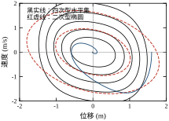
为什么二次型一定失败？可以给一个不依赖求解器的说明。假设存在正定二次型 V=x^{\mathsf T}Px 使 \dot V<0 全局成立。沿 x_2=0 这条线，\dot V=-2P_{12}x_1^{2}-2P_{22}x_1^{3}（把 x_2=0 代入后只剩这两项）。当 x_1\to-\infty 时，-2P_{22}x_1^{3}\to+\infty，符号由三次项决定，与 P 的取值无关。也就是说，只要 P_{22}>0，x_1 取足够大的负值时 \dot V 必然为正。二次型在这个对象上不是“没找到”，而是“不可能找到”。
既然要把多项式写成平方和，就得先问：是不是所有非负多项式都能写成平方和？答案是否定的，而且反例很早就有。
Motzkin 在 1967 年给出的多项式
M(x)=x_1^{4}x_2^{2}+x_1^{2}x_2^{4}+1-3x_1^{2}x_2^{2} \tag{53-4}
在平面上处处非负，等号只在三个点上成立：原点、(\pm1,\pm1) 中满足 x_1^{2}=x_2^{2}=1 的两点。但它不能写成任何多项式的平方和。这个结论可以用初等代数验证：若 M=\sum p_i^{2}，则每个 p_i 的次数不超过 3，比较 x_1^{4}x_2^{2} 与 x_1^{2}x_2^{4} 的系数会逼出矛盾。
这个反例的意义在于划清了界限：平方和是充分条件，不是必要条件。 用 SOS 求稳定性，可能在一个其实稳定的系统上返回 infeasible。工程上必须接受这个代价，同时也要知道代价有多大。
代价的大小取决于问题结构。对 Lyapunov 证书而言，常见的 V 往往是“能量型”的，本身就是平方和（动能是速度的平方，势能在平衡点附近可以展开成平方和）。真正卡住的情况是势能函数有多个极小、或者约束导致有理函数。这时可以用 S-procedure 把约束乘进去，或者先做变量替换把非多项式化成多项式。
还有一个更细的界限：即使 M 非负，M 加一个很小的常数倍 \|x\|^{2} 之后往往就能写成平方和。这说明 SOS 的“失败”常常只是裕度不够，而不是结构不对。本章后面调参时会反复用到这一点：先给一个小正裕度，解不出来再放大次数，而不是一上来就上高次。
SOS 解决的是“二次型不够用”，但它仍然继承了第 52 章的一个前提：必须知道平衡点在哪，而且 V 要在这个点上取极小。工程上还有两类问题不满足这个前提。
第一类是平衡点随工况移动。机械臂抓取不同负载、飞行器在不同高度配平、电机在转矩模式下带着一个缓慢变化的负载，工作点一直在动。这时“在某个点上做 Lyapunov 分析”变成了一件没有意义的事——分析完这个点，工况已经走了。需要的是一种“不管平衡点在哪，任意两条轨迹都互相靠拢”的性质。
收缩分析就是干这个的。它不看 V，而看两条相邻轨迹的差 \delta=x_a-x_b，其演化近似为
\dot\delta=J(x)\,\delta,\qquad J(x)=\frac{\partial f}{\partial x} \tag{53-5}
若存在 \rho>0 使 J 的对称部分处处满足 \lambda_{\max}\big((J+J^{\mathsf T})/2\big)\le-\rho，则任意两条轨迹的距离按 e^{-\rho t} 衰减——注意这里完全没有出现平衡点。用本章的对象
\dot x_1=-x_1+x_2,\qquad \dot x_2=-x_1-x_2-0.1x_2^{3} \tag{53-6}
算一下：雅可比是
J(x)=\begin{bmatrix}-1&1\\-1&-1-0.3x_2^{2}\end{bmatrix},\qquad \frac{J+J^{\mathsf T}}{2}=\begin{bmatrix}-1&0\\0&-1-0.3x_2^{2}\end{bmatrix} \tag{53-7}
对称部分居然是对角的。它的最大特征值是 \max(-1,\;-1-0.3x_2^{2})=-1，与 x_2 无关。于是 \rho=1，全局成立，不需要任何关于初值范围的假设。脚本实测两条轨迹的对数斜率为 -1.006814，与理论下界 1 的比值是 1.006814——实测比下界还略快一点，因为 \mu 是在整条状态空间上取的最坏值，而实际轨迹大部分时间待在 \mu 更负的区域。
第二类是需要把多个子系统拼起来。一个机器人有六个关节，每个关节的控制器单独验证过，整机是否稳定？如果每个关节都是“无源”的，那么串联、并联、负反馈互联之后仍然无源，整机稳定性自动成立。这是无源性的独特价值：它给的不是一个数，而是一张可以组合的证书。
第三类是平衡点未知但能量关系清楚。比如带摩擦的机械臂，摩擦力模型很难写准，但“摩擦力总是做负功”这一点是确定的。无源性只需要这个定性事实，不需要摩擦的具体形式。
图 53-1 把本章与上一章的工具摆在一起。判断的入口不是“系统难不难”，而是“你手里有什么、想要什么”。
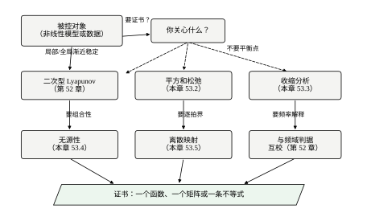
如果对象有明确的平衡点、模型是多项式或可多项式化，而且你需要一个全局证书，那么走 SOS。它的输出是一组系数，任何人代回去都能验证，这是它相对于数值仿真的最大优势。
如果平衡点在动，或者你关心的是“两条轨迹会不会分开”而不是“会不会回到原点”，走收缩分析。它只需要雅可比矩阵的对称部分，计算量极小，代价是保守——\mu 取的是全空间最坏值。
如果你要把若干部件组合起来，或者模型里有一些“只知道符号”的环节，走无源性。它不给收敛速率，但给组合规则。
如果对象是线性的、或者工作点附近的线性化足够用，回到第 52 章。二次型 Lyapunov 方程的解是解析的、计算是毫秒级的，没有任何理由用 SOS 去解一个本来就有闭式解的问题。
四种工具不是替代关系。一个典型的工程做法是：先用无源性把整体架构搭起来，保证互联不会自激；再用收缩分析给出跟踪误差的收敛速率；最后在关键工况点上用 SOS 或 Lyapunov 做一次定量核对。三者回答的是不同的问题，结论可以互相印证。
本章的十二节按“为什么—是什么—怎么做—做得怎么样”展开，读的时候可以按三条线走。
第一条线是概念线，对应 53.1 与 53.2。53.1 用一个具体对象说明“二次型证书为什么不够用”，引出平方和、收缩、无源三种思路；53.2 把三种思路的数学写清楚，包括 Motzkin 反例、矩阵测度、KYP 引理，最后用一张表把三种工具与第 52 章的二次型方法放在一起对照。这条线不涉及代码，读的时候关注“每种工具需要的输入是什么、给出的输出是什么”。
第二条线是操作线，对应 53.3 到 53.5。53.3 给三条流程的步骤，53.4 在三个连续对象上各跑一遍，53.5 讨论离散化带来的新问题。这条线的每个数字都来自脚本，读的时候可以对照 §53.12 的报告编号，也可以自己跑一遍核对。三个连续对象不是随便挑的：硬化弹簧对应 SOS，旋转加三次阻尼对应收缩，机械臂对应无源，各自展示一种工具的典型用法与典型困难。
第三条线是判断线，对应 53.6 到 53.11。53.6 讨论“证出来之后这些数怎么读”，53.7 逐个说明五个参数的作用，53.8 给排查经验，53.9 给改进方向，53.10 讲工程落地，53.11 划适用边界。这条线不产生新结论，但决定你会不会用错工具——工程上出问题，多半不是算不出来，而是把结论用在了不适用的地方。
53.12 是附录性质的一节，讲代码怎么组织、怎么改成自己的对象。它可以最后读，也可以在读 53.3 时就跳过去看对应的实现。
三条线的读法不同：第一条线要慢读，概念错了后面全错；第二条线要动手，光看数字没有体感；第三条线要结合自己的对象读，看到某条经验时想一想“我的系统是不是也这样”。若时间只够读一遍，建议按 53.1、53.3、53.6、53.11 的顺序读这四节，它们分别是“为什么”“怎么做”“怎么读结果”“什么时候别用”，构成一个最小闭环。
先把“平方和”写成可计算的形式。一个多项式 p(x) 称为平方和，是指存在多项式 q_1,\dots,q_m 使
p(x)=\sum_{i=1}^{m}q_i(x)^{2} \tag{53-8}
直接按这个定义搜索 q_i 的系数是双线性的（q_i 乘 q_i），不是凸问题。关键的改写是引入单项式向量：设 z(x) 收集了所有次数不超过 d 的单项式，则 p 是平方和等价于存在半正定矩阵 Q 使
p(x)=z(x)^{\mathsf T}Q\,z(x),\qquad Q\succeq0 \tag{53-9}
这一步把“找多项式”变成了“找矩阵”，而 Q\succeq0 是标准的半定锥约束。Q 通常称为 Gram 矩阵，它不唯一——Q 与 Q+Q_0（Q_0 落在 z^{\mathsf T}Q_0z\equiv0 的零空间里）给出同一个 p，这个不唯一性在数值上会表现为求解器返回的解“看起来不对称”，但不影响证书的有效性。
对 (53-1) 用四次型 (53-2)，\dot V 的次数是 6，所以 z 要取到次数 3。二元三次以内的单项式有多少个？答案是 10 个：1,x_1,x_2,x_1^{2},x_1x_2,x_2^{2},x_1^{3},x_1^{2}x_2,x_1x_2^{2},x_2^{3}。于是 Q 是 10\times10 的对称矩阵，含 55 个独立元素。约束是：-V'-\varepsilon\|x\|^{2}=z^{\mathsf T}Qz\succeq0 且 Q\succeq0。
“等式”怎么落成约束？按单项式逐项匹配系数。左边是一个已知系数的六次多项式（系数是 P、Q_4 的线性函数），右边是 z^{\mathsf T}Qz 展开后同样按单项式归并。两边同次项的系数必须相等，于是得到一组线性等式。整个问题因此是
\text{找 }P\succeq\varepsilon I,\;Q_4\succeq0,\;Q\succeq0\quad\text{使}\quad -V'(x)-\varepsilon\|x\|^{2}\equiv z^{\mathsf T}Qz \tag{53-10}
这是一个半定规划的可行性问题，没有目标函数（或目标取常数）。脚本用 CLARABEL 求解，失败时用 SCS 兜底。
解出来的两个矩阵有一个值得注意的特征：Q_4 的最小特征值是 4.151498\times10^{-6}，Q 的最小特征值是 -8.877058\times10^{-9}。前者是正的小量，后者是负的小量——负的。理论上 Q\succeq0，数值上却出现了 -10^{-9} 量级的负特征值。这不是求解器出错，而是内点法在锥边界上的典型行为：最优解就落在边界上（Q 奇异），数值误差会把特征值推到零的两侧。工程上的处理方式是设一个容差（例如 -10^{-7}），并对解做回代验证，而不是要求特征值严格非负。
回代验证的结果是：在 [-2,2]^{2} 的 161\times161 网格上，去掉原点附近半径 0.5 的圆之后，\dot V 的最大值是 -1.647044\times10^{-1}，全局为负；而 \min\big[-\dot V-\varepsilon\|x\|^{2}\big] 在整张网格上是 -0.000000\times10^{0}，即证书在数值精度内成立。作为对照，等权二次型 V=\tfrac12(x_1^{2}+x_2^{2}) 在同一张网格上的 \dot V 最大值是 +12——不但不正，而且大得离谱。图 53-3 把这个正区画了出来，图 53-4 则画出了四次型对应的 \dot V 分布。
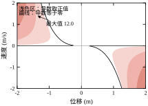
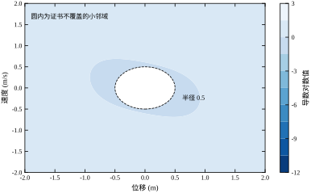
图 53-3 里有一条黑色的零等值线，它把平面分成两部分。线外的浅色区域 \dot V>0，也就是说用等权二次型做证书，轨迹在那些区域里“能量”反而在增加。图 53-4 是同一个对象的四次型证书，颜色越深表示 -\dot V 越大，白色虚线圆是证书不覆盖的小邻域（|x|<0.5）。两张图摆在一起，就能看出“换个 V”到底改变了什么。
先给矩阵测度一个精确的定义。对矩阵 A\in\mathbb{R}^{n\times n}，
\mu(A)=\lambda_{\max}\!\left(\frac{A+A^{\mathsf T}}{2}\right) \tag{53-11}
它是 A 的对称部分的最大特征值。这个名字来自它的一个等价刻画：\mu(A)=\lim_{h\to0^{+}}\big(\|I+hA\|-1\big)/h，即“沿 A 的方向走一小步，范数最多长多快”。若 A 的特征值都在左半平面，\mu(A) 一定是负的；反过来不成立（\mu(A)<0 比“特征值在左半平面”更强，它排除了非正规矩阵的瞬态增长）。
有了 \mu，两条轨迹距离的演化可以一行推出。设 \delta=x_a-x_b，由中值定理
\dot\delta=f(x_a)-f(x_b)=J(\xi)\,\delta \tag{53-12}
其中 \xi 是两点连线上的某点。对 \|\delta\|^{2} 求导：
\frac{\mathrm{d}}{\mathrm{d}t}\|\delta\|^{2}=2\delta^{\mathsf T}J(\xi)\delta=\delta^{\mathsf T}\big(J+J^{\mathsf T}\big)\delta\le2\mu\big(J(\xi)\big)\|\delta\|^{2} \tag{53-13}
于是只要 \mu(J(x))\le-\rho 在状态空间的一个凸集上处处成立，就有
\|\delta(t)\|\le e^{-\rho t}\|\delta(0)\| \tag{53-14}
这个结论有多强？它不要求这个凸集里存在平衡点，不要求 f 可积，也不要求 \rho 与初值有关。只要两条轨迹始终待在这个凸集里，“互相靠拢”就是必然的。反过来，如果轨迹跑出了凸集，结论就失效——这是收缩分析最容易被误用的地方：它给的是条件性的全局结论，条件的验证往往比结论本身更难。
工程上常用的做法是先用仿真确认轨迹的活动范围，再在这个范围内验证 \mu\le-\rho。这不是严格证明，但比“在工作点线性化”要可靠得多，因为它覆盖了一整片区域而不是一个点。
加权形式值得单独说。取正定矩阵 \Theta，定义加权范数 \|\delta\|_{\Theta}=\|\Theta\delta\|，则
\mu_{\Theta}(J)=\mu\big(\Theta J\Theta^{-1}\big) \tag{53-15}
换 \Theta 相当于换一把尺子。对 (53-6)，未加权时 \mu=-1；取 \Theta=\mathrm{diag}(2,1) 后，脚本算出 \max\mu_{\Theta}=-0.25，收缩率反而从 1 降到 0.25。这说明加权不是“总能改进”的魔法——尺子选错了会更保守。为什么会这样？因为 \Theta 把 x_1 方向的度量放大了一倍，而 J 的耦合项正好把 x_2 的信息送到 x_1，放大之后就掩盖了原本的收缩。
受迫情形只需要在 (53-13) 右边加一项。若 \dot\delta=J\delta+d(t)，则
\frac{\mathrm{d}}{\mathrm{d}t}\|\delta\|\le-\rho\|\delta\|+\|d(t)\| \tag{53-16}
用比较引理解得
\|\delta(t)\|\le e^{-\rho t}\|\delta(0)\|+\frac{1-e^{-\rho t}}{\rho}\sup_{\tau\le t}\|d(\tau)\| \tag{53-17}
这个式子的工程含义很直接：初始差异被忘掉，剩下的误差上界是扰动幅度除以收缩率。收缩率越大，系统对扰动的“记忆”越短。 这就是为什么收缩分析在跟踪问题里比在调节问题里更有用——跟踪误差的稳态界可以直接由 (53-17) 读出。
无源性的出发点是能量而不是距离。一个系统称为无源，是指存在非负的存储函数 V(x) 使
\dot V\le u^{\mathsf T}y \tag{53-18}
对任意输入 u 成立。积分起来就是“输出做的功不少于存储的增加”：
\int_0^{T}u^{\mathsf T}y\,\mathrm{d}t\ge V(x(T))-V(x(0))\ge-V(x(0)) \tag{53-19}
也就是说，无源系统不能凭空产生能量。这个性质看起来弱，但它对互联极其友好。
线性系统的无源性有一个漂亮的频域等价。对 G(s)=C(sI-A)^{-1}B+D，无源性等价于 \mathrm{Re}\,G(\mathrm{j}\omega)\ge0 对所有 \omega 成立，也等价于存在 P\succ0 使 KYP 不等式
\begin{bmatrix}A^{\mathsf T}P+PA&PB-C^{\mathsf T}\\B^{\mathsf T}P-C&-D-D^{\mathsf T}\end{bmatrix}\preceq0 \tag{53-20}
成立。左边是一个分块矩阵，条件是关于 P 线性的——又是一个半定规划。脚本对单自由度机械臂 M\ddot q+b\dot q+k\sin q=\tau，取速度 y=\dot q、输入 \tau，在平衡点附近线性化后求 (53-20)，得到
P=\begin{bmatrix}4.905003&0\\0&0.5\end{bmatrix},\qquad \lambda(P)=\{0.5,\;4.905003\} \tag{53-21}
分块矩阵的最大特征值是 +4.160\times10^{-10}，数值上等于零——解正好落在可行域的边界上。这个 P 的物理意义很清楚：对角元 4.905003 就是 k=Mg/l 那个刚度系数，0.5 就是质量 M。存储函数 V=\tfrac12M\dot q^{2}+k(1-\cos q) 正是机械能，求解器把物理直觉重新发现了一遍。
频域核对给出同样的结论：G(\mathrm{j}\omega) 的实部在整条频率轴上非负，最小值 +3.325\times10^{-6}（在 \omega=10^{-2} rad/s 处），最大值 4.999955（在 \omega=3.133 rad/s 处），幅值最大 4.999978。实部可以写成闭式
\mathrm{Re}\,G(\mathrm{j}\omega)=\frac{2b\omega^{2}}{(k-M\omega^{2})^{2}+(b\omega)^{2}}\ge0 \tag{53-22}
分子分母都非负，所以无源性是结构性的，不依赖参数取值。这一点很重要：改变 M、b、k 只会改变曲线形状，不会破坏无源性。工程上这类“由物理结构保证”的性质，比“由参数整定保证”的性质可靠得多。
无源性的组合规则有两条。第一条是并联：两个无源系统并联，存储函数取和，输入输出相加，仍无源。第二条是负反馈互联：若 u_1=e_1-y_2、u_2=y_1+e_2，则
\dot V_1+\dot V_2\le u_1^{\mathsf T}y_1+u_2^{\mathsf T}y_2=e_1^{\mathsf T}y_1+e_2^{\mathsf T}y_2 \tag{53-23}
交叉项 y_1^{\mathsf T}y_2 正好抵消。这条规则是无源性在机器人领域流行的根本原因：关节控制器、机械臂本体、环境接触各自无源，互联之后整机自动无源，不需要重新做一次整体稳定性分析。
四种工具的关系可以用一张表说清。它们证的都是“稳定性”，但需要的输入、给出的输出、能做的运算完全不同。
表 53-1 四种稳定性工具的口径对照
| 工具 | 需要的信息 | 证书形式 | 是否给速率 | 可否组合 | 主要保守性来源 |
|---|---|---|---|---|---|
| 二次型 Lyapunov | 平衡点、线性化或二次型 f | 矩阵 P | 给（\lambda_{\min}(Q)/\lambda_{\max}(P)） | 弱 | V 限定为二次 |
| 平方和 | 多项式模型、平衡点 | 系数矩阵 P,Q_4,Q | 只给裕度 \varepsilon | 弱 | SOS 是充分条件 |
| 收缩分析 | 雅可比矩阵、凸集 | 一个数 \rho | 给（指数） | 中（可串联） | \mu 取全空间最坏值 |
| 无源性 | 输入输出、能量函数 | 存储函数 V | 不给 | 强 | 要求 \mathrm{Re}\,G\ge0 |
表里“可否组合”这一列最容易被低估。Lyapunov 方法在组合时会遇到麻烦：两个子系统各自的 V_1、V_2 加起来，交叉项不一定负；SOS 也有同样的问题，除非把互联项一起写进多项式。无源性没有这个问题，因为交叉项在 (53-23) 里被结构性地消掉了。收缩分析介于两者之间：串联的收缩系统仍收缩（收缩率相加），但反馈互联不一定。
“是否给速率”这一列也需要解释。SOS 本身是一个可行性问题，求解器不优化收敛速率，所以它只告诉你“稳定”，不告诉你“多快”。要加速度，得把 \varepsilon 作为决策变量做大化，或者在外层做二分——这就变成了一个优化问题，规模更大、更容易数值失败。工程上的折中做法是：用固定的 \varepsilon 求可行性，再用仿真估速率，两者互相核对。
最后要强调一点：这四种方法证的是同一件事的不同侧面，不是四个竞争方案。 一个系统可以同时是二次型稳定的、收缩的、无源的，四个结论都成立，只是每个结论覆盖的范围和给出的信息不同。真正危险的情况是四个方法都失败——这往往说明对象本身有问题，而不是工具不够好。
同一件事用三种语言说，骨架其实相同：都是“找一个量，证明它单调”。差别在于这个量是什么、单调性怎么证、结论覆盖多大范围。把三条骨架并排写出来，比分别看三段推导更容易记住。
平方和的骨架。 待证命题是“存在 V>0 使 \dot V<0”。证明分四步：设 V 为偶次多项式，待定系数；把 \dot V+\varepsilon\|x\|^{2} 写成 z^{\mathsf T}Qz；要求 Q\succeq0 且 V 的系数矩阵正定；解半定规划，取到一个可行解即为证书。整个证明是构造性的：解出来的矩阵就是证书，不需要再做任何推理。
收缩分析的骨架。 待证命题是“任意两条轨迹的距离按 e^{-\rho t} 衰减”。证明分三步：写出距离的微分不等式 \dot d\le\mu(J)d；在状态集合上取 \mu 的上界，得 \dot d\le-\rho d；积分得 d(t)\le d(0)e^{-\rho t}。整个证明是估计性的：不需要构造任何函数，只需要算一个上界。
无源性的骨架。 待证命题是“存储函数的变化不超过外部注入”。证明分三步：取能量函数 V；沿系统求导；证明 \dot V\le u^{\mathsf T}y。线性情形下这一步等价于一个 LMI（KYP）。整个证明是验证性的：V 通常由物理直觉直接给出，不需要搜索。
三条骨架的差别可以用三个词概括：构造、估计、验证。这也决定了它们的失败模式：构造失败是“解不出来”（不可行）；估计失败是“界是正的”（\mu\ge0）；验证失败是“不等式不成立”（有源）。三种失败的含义完全不同，排查方向也完全不同——这是 §53.8 那张排查表的理论基础。
还有一处细节值得对照：三条骨架对“区域”的处理方式不同。平方和证明的是“整个 \mathbb{R}^{n}”，除非用 S-procedure 限定区域；收缩分析证明的是“\mu 上界所在的那个集合”，集合变了结论就变；无源性证明的是“所有允许的输入”，不涉及状态区域。这三种“区域”概念经常被混淆，尤其是把无源性的“全输入”误当成“全状态”——前者说的是输入信号的集合，后者说的是初始条件的集合，两者不是一回事。
图 53-11 给出 SOS 证书的标准流程。五步的顺序不能颠倒，因为每一步都在为下一步准备输入。
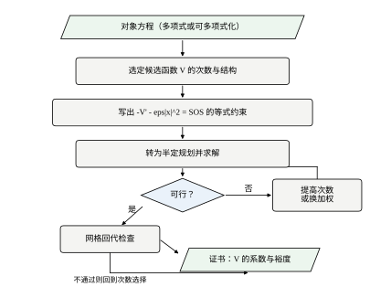
第一步，把对象写成多项式。状态方程里出现 \sin、\mathrm{sign}、饱和、绝对值，都不能直接进 SOS 求解器。常用处理有三种：在工作点附近做泰勒展开并声明适用范围；用辅助变量把非多项式项换掉（例如令 s=\sin q、c=\cos q，补上 s^{2}+c^{2}=1 的约束）；或者对分段系统分段求解。
第二步，选 V 的次数与结构。这一选择决定了问题的规模。二元二次 V 对应 Q 为 6\times6；二元四次 V 对应 Q 为 10\times10。表 53-2 给出了不同维数与次数下的单项式个数，可以看到增长很快：n=6、次数 3 时已经是 84 个单项式，Q 是 84\times84，含 3570 个独立元素。
表 53-2 单项式个数随维数与次数的增长
| 维数 n | 次数 d=2 | 次数 d=3 |
|---|---|---|
| 2 | 6 | 10 |
| 3 | 10 | 20 |
| 4 | 15 | 35 |
| 5 | 21 | 56 |
| 6 | 28 | 84 |
第三步，写出等式约束。把 -V'-\varepsilon\|x\|^{2} 展开，按单项式归并系数，令其等于 z^{\mathsf T}Qz 的同次项系数。这一步最容易出错的地方是漏项：V 里没有出现的单项式，在 \dot V 里可能出现，而对应的等式约束必须写出来，否则求解器会给出一个“看起来可行”但实际不满足恒等式的解。
第四步，求解并检查状态。optimal 表示找到证书；infeasible 表示在这个次数下不存在证书；optimal_inaccurate 表示找到了但数值精度不足，需要换求解器或缩放变量。脚本的选择顺序是 CLARABEL 优先、SCS 兜底，两者都失败才判定不可行。
第五步，回代验证。这一点在本章被反复强调，因为 SOS 的数值解经常落在锥边界上，特征值会出现 -10^{-9} 量级的负值。验证方法是在一个足够密的网格上直接计算 \dot V 的最大值，确认它为负；同时确认 \min[-\dot V-\varepsilon\|x\|^{2}] 不为负。网格验证不是证明，但它能抓住绝大多数实现错误。
收缩分析的流程比 SOS 短得多，但有一个隐藏的难点。
第一步，算雅可比并取对称部分。对 (53-6)，脚本在 x_2\in[-4,4] 上采样 161 个点，逐点求 \lambda_{\max}\big((J+J^{\mathsf T})/2\big)。结果是常数 -1，与 x_2 完全无关。这个“常数”不是巧合：对称部分是对角阵 \mathrm{diag}(-1,-1-0.3x_2^{2})，第一个对角元恒为 -1，第二个恒不大于 -1，取最大值当然还是 -1。
第二步，确定 \rho 并检查正不变集。这一步是真正的难点。由 (53-14) 得到的收敛结论有一个前提：两条轨迹始终待在验证过 \mu\le-\rho 的那个集合里。如果集合选得太小，轨迹一出去结论就失效；选得太大，\mu 可能不满足。工程上的做法是先仿真、看轨迹包络，再用包络做一个箱体或椭球，最后在这个集合上验证 \mu。严格的数学做法需要证明集合是正向不变的（从集合内出发永远不出去），这通常要额外构造一个障碍函数，工作量不小。
第三步，受迫情形套用 (53-17)。若已知扰动幅度 \sup\|d\|，稳态误差上界是 \sup\|d\|/\rho。本章的受迫算例里，两条轨迹的初始距离 1.802776，5 s 后降到 1.104\times10^{-1}，10 s 后降到 4.661\times10^{-5}，末时刻与初值的比值是 2.585\times10^{-5}。扰动是 1.5\sin 2t，按 (53-17) 估算的稳态界是 1.5/1=1.5——实际距离远小于这个界，因为两条轨迹受的是同一个扰动，扰动项在差值方程里几乎抵消了。
这个差异点出了一个使用要点：（53-17）里的 d 是两条轨迹所受扰动的差，不是扰动本身。 如果两条轨迹受同一个输入，差值方程里的扰动项为零，收敛仍然是纯指数的。本章算例正是这种情况——同一个 u(t) 加在两条轨迹上，所以距离一路降到 10^{-5} 量级。若两条轨迹受不同扰动（比如一个受扰、一个不受），界才需要用 1.5/1。
无源性的流程只有三步，但第一步选错，后面全白做。
第一步，选端口。端口就是输入输出对 (u,y)。同一个对象，换一对端口，无源性可能成立也可能不成立。机械臂取 (\tau,\dot q) 是无源的，因为 \tau\dot q 就是功率；换成 (\tau,q) 就不无源，因为对应的传递函数是
G_q(s)=\frac{1}{Ms^{2}+bs+k},\qquad \mathrm{Re}\,G_q(\mathrm{j}\omega)=\frac{k-M\omega^{2}}{(k-M\omega^{2})^{2}+(b\omega)^{2}} \tag{53-24}
当 \omega>\sqrt{k/M}=\sqrt{9.81}\approx3.13 rad/s 时分子为负，实部为负。这不是模型的问题，是端口选错了：位置和力矩之间隔着一个二阶系统，相位可以超过 90°，能量关系不再单向。
端口选择的经验规则是：端口变量之积必须是功率。 力学系统取（力，速度），电路取（电压，电流），热系统取（温差，热流）。凡是乘积不是功率的组合，无源性一般都不成立。
第二步，找存储函数。优先用物理能量，因为它天然非负、天然满足耗散不等式；物理能量不好写时（例如含非线性摩擦），再解 KYP 的 LMI (53-20)。脚本对机械臂两条路都走了：物理能量给出 V=\tfrac12M\dot q^{2}+k(1-\cos q)，KYP 给出 P=\mathrm{diag}(4.905003,0.5)，两者在平衡点附近一致。
第三步，用组合规则搭整体并检查符号。这一步只需要代数运算：把各子系统的存储函数相加，把互联关系代入，看交叉项是否抵消。若交叉项没有抵消，说明互联方式不是“负反馈”意义上的功率守恒连接，需要加阻尼注入或者改成另一种拓扑。
时域核对是最后一道关。脚本对 M=0.5、b=0.4、k=4.905 的机械臂施加 \tau=2\sin3t，从 q=0.5、\dot q=0 出发积分 12 s，算出储能变化 +3.913069 J、输入功 +36.474922 J、阻尼耗散 +32.561853 J。按 (53-19)，输入功应该等于储能变化加耗散：3.913069+32.561853=36.474922，两边完全对上，残差 +2.486\times10^{-7}——这个残差是梯形积分的截断误差，不是模型误差。图 53-9 把三条曲线画在一起：输入功一路爬升到 36.5，耗散紧随其后，两者之差就是那条几乎贴着零的储能变化。
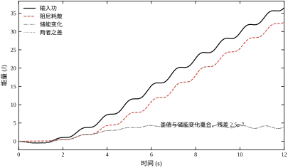
三条流程看起来差别很大，骨架其实一样：先把“稳定性”翻译成一个不等式，再把这个不等式翻译成一个可计算的凸问题，最后回代验证。
SOS 翻译出的不等式是 -V'-\varepsilon\|x\|^{2}\ge0，用平方和把它变成半定规划。收缩分析翻译出的不等式是 \mu(J)\le-\rho，它本身就是一组特征值不等式，不需要再转。无源性翻译出的不等式是 \dot V\le u^{\mathsf T}y，线性情形下用 KYP 变成半定规划。
三条流程的验证环节也一致：都要回到原始的非线性方程上核对。SOS 用网格，收缩用仿真轨迹，无源用能量平衡。这一步不能省，因为三种方法都在某处引入了松弛——SOS 松弛了“非负”到“平方和”，收缩松弛了“每条轨迹”到“最坏雅可比”，无源松弛了“具体轨迹”到“能量不等式”。
选择哪条流程，取决于三件事：模型是不是多项式、平衡点是否固定、是否需要组合。表 53-3 把这个选择写成了一张判定表。
表 53-3 流程选择的判定表
| 情形 | 首选 | 备选 | 说明 |
|---|---|---|---|
| 多项式模型、平衡点固定、要全局结论 | SOS | 二次型 Lyapunov | 先试二次，失败再加四次 |
| 平衡点随工况移动、要跟踪误差界 | 收缩分析 | 增益调度 | 检查正不变集 |
| 多部件互联、含未建模环节 | 无源性 | 小增益定理 | 端口必须选功率对 |
| 单工作点、线性化够用 | 二次型 Lyapunov | 极点判据 | 不要过度设计 |
把 53.3.1 的五步在 (53-1) 上完整走一遍，能看到每一步的具体产物。这一步很重要，因为教材常把流程写得像“填空题”，实际做起来每一步都有判断。
第一步的产物是一组单项式。 取 V 为四次，\dot V 就是六次（四次 V 乘一次 f，但 f 里有三次项，所以 \dot V 最高到七次；实际求解时按最高次配 z）。二元、三次以内的单项式共 10 个：1,x_1,x_2,x_1^{2},x_1x_2,x_2^{2},x_1^{3},x_1^{2}x_2,x_1x_2^{2},x_2^{3}。P 占 3 个自由度，Q_4 占 6 个，乘子 Q_2 占 15 个（3\times3 对称阵去掉冗余后是 6 个），总决策变量不到 20 个。
第二步的产物是约束集合。 包括 P\succeq\varepsilon I、Q_4\succeq0、Q_2\succeq0，以及 \dot V 与 z^{\mathsf T}Q_2z 逐项相等的那一组线性等式。等式约束的个数等于所有可能出现的单项式个数，本章对象是 15 个左右。
第三步的产物是一次求解。 二次型先试：infeasible，0.033 s。这个结果不是失败，而是信息——它说明“只用二次型无法证明全局稳定”，必须加四次项。改成四次型后 optimal，0.044 s。两次求解加起来不到 0.1 s，这就是 SOS 在低维问题上的实际成本。
第四步的产物是具体的 V。 求解器返回
\begin{aligned} V(x)=&1.350696\,x_1^{2}+0.747537\,x_1x_2+1.737740\,x_2^{2}\\ &+0.879555\,x_1^{4}+0.006842\,x_1^{3}x_2+0.001245\,x_1^{2}x_2^{2}\\ &+0.000248\,x_1x_2^{3}+0.000011\,x_2^{4} \end{aligned}
读这个式子能看出三件事。第一，二次部分的主对角元接近 1.35 与 1.74，与“刚度 1、阻尼 1”的量级一致——V 大致是“能量”的某个正定倍数。第二，四次部分的系数极不均匀：x_1^{4} 的系数 0.879555 比 x_2^{4} 的 0.000011 大五个数量级。这不是数值噪声，而是结构性的：非线性只出现在 x_1 方向（-x_1^{3}），所以证书只需要在 x_1 方向加高次修正，x_2 方向保持二次就够了。第三，交叉项 x_1^{3}x_2、x_1^{2}x_2^{2}、x_1x_2^{3} 的系数都在 10^{-4} 到 10^{-2} 之间，是小量，说明两个方向的耦合不强。
第五步的产物是一组可复核的数字。 Q_4 的最小特征值是 4.151498\times10^{-6}，正值，说明四次块确实是半正定的（贴零是内点法的正常行为）。在 \|x\|\ge0.5 的环带上，网格最大值 \max\dot V=-1.647044\times10^{-1}；验证残差 \min[-\dot V-\varepsilon\|x\|^{2}]=-0.000000\times10^{0}，说明约束取等号。
把这五步的产物串起来，就是一份完整的证书：一组单项式（说明搜索空间）、一次求解（说明可行）、一个显式 V（说明结论）、一组验证数字（说明可信）。缺任何一环，结论都会被打折。
值得对照的是“等权二次型”的失败。如果不用求解器，直接取 V=\tfrac12(x_1^{2}+x_2^{2})，沿 (53-1) 求导得到
\dot V=x_1x_2+x_2(-x_1-x_1^{3}-x_2)=-x_1^{3}x_2-x_2^{2}
这个式子在 x_1=2、x_2=-1 处取 +8-1=+7，是正的大数。等权二次型在网格上的最大值实测是 +1.200000\times10^{1}，比零大一个数量级。这个对照说明：二次型不是“随便取一个就能用”，P 的选择直接决定成败。 求解器的作用正是把“选 P”变成一个可以系统完成的任务。
本节把三条路线在三个对象上各跑一遍。所有数字来自 code/ch053_sim.py，可以直接复现。
对象是 (53-1)。求解结果已经在 53.2.1 里给过，这里补充两个容易忽略的细节。
第一个细节是二次型失败的必然性。53.1.1 里用 x_2=0 这条线给出了论证：只要 P_{22}>0，沿 x_1\to-\infty 时 \dot V\to+\infty。这个论证只用了 \dot V 的三次项，与 P 的具体数值无关。所以求解器返回 infeasible 是正确行为，不是在 report 一个数值问题。工程上遇到 infeasible，第一件事应该是问“是不是这个函数类里根本不存在”，而不是“是不是求解器没调好”。
第二个细节是四次项的量级。解出的 V 里，二次部分占绝对主导（x_1^{2} 系数 1.35、x_2^{2} 系数 1.74），四次部分最大的是 x_1^{4} 的 0.879555，其余三个四次项都在 10^{-3} 以下。为什么 x_1^{3}x_2、x_1x_2^{3}、x_2^{4} 这么小？因为 \dot V 里最难消的是 x_1^{3}x_2 这一项（它来自 -x_1^{3} 乘 x_2），要让它变负，最经济的方式是在 V 里放一个 x_1^{4}。其余四次项对消项贡献不大，求解器就把它们压到接近零。这个“稀疏”结构不是人为约束出来的，是可行性问题的自然解。
图 53-2 已经画过水平集。这里补充一个数值观察。二次部分的两个特征值是 1.123322 与 1.965114，比值 1.75，说明二次型本身已经是一个明显拉长的椭圆，长轴沿特征值较小的那个方向。四次部分的贡献主要在 x_1^{4}，它让等值线在大位移处向 x_1 轴收拢。所以在这个对象上，四次修正的作用不是“把椭圆变成别的形状”，而是让 \dot V 在大位移处仍然为负。这一点常被误解：很多人以为 SOS 会给出一个“更贴合轨迹”的水平集，实际上它只保证可行性，不保证形状最优。要形状最优，得在外层加目标函数，例如最大化 \{x:V(x)\le1\} 的体积，那是另一个（更难解的）问题。
对象是 (53-6)。这个系统的线性部分是 \begin{bmatrix}-1&1\\-1&-1\end{bmatrix}，特征值 -1\pm\mathrm{j}，是一个带旋转的稳定焦点；三次项 -0.1x_2^{3} 只在大速度时起作用。
矩阵测度在 x_2\in[-4,4] 上的最大值是 -1.000000，因此 \rho=1。两条轨迹从 (1,1) 与 (-0.5,2) 出发，初始距离 1.802776。图 53-5 画出它们在相平面上的走向：两条曲线螺旋着靠近原点，等时刻的连线（点线）越来越短。
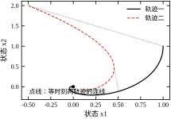
实测的对数斜率是 -1.006814。取 t\in[0.5,3] 这一段做最小二乘拟合，得到的就是这个数。与理论下界比较：-1.006814/(-1)=1.006814，实测比下界快 0.68\%。6 s 后距离降到 3.986\times10^{-3}，与初始值之比 2.211\times10^{-3}，而 e^{-6}=2.479\times10^{-3}——实测值比理论界小约 11\%。这个差别来自 \mu 的取法：\mu=-1 是整条线上的最坏值，实际轨迹的速度一旦离开零，第二个对角元就比 -1 更负，收缩更快。
图 53-6 画出矩阵测度随 x_2 的变化。未加权那条是一条水平线（恒为 -1），加权那条是开口向下的抛物线（在 x_2=0 处取 -0.25，随 |x_2| 增大而更负）。两条线都在零以下，这是收缩性的直接证据。
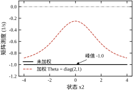
受迫情形见图 53-7。同一个 u=1.5\sin2t 加在两条轨迹上，距离从 1.802776 一路降到 10 s 时的 4.661\times10^{-5}。注意纵轴是对数坐标，曲线在中段几乎是一条直线，斜率与 \rho=1 的参考线平行。末段出现轻微的下弯，是因为距离已经接近数值精度，浮点误差开始主导。
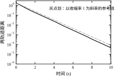
把三个数字放在一起看：\rho=1、实测斜率 1.0068、10 s 后距离与初值之比 2.6\times10^{-5}。它们互相印证，说明这个对象的收缩性是“结构性”的，不是参数凑出来的。改变三次项系数会改变 \mu 吗？不会——对称部分的第二个对角元是 -1-0.3x_2^{2}，系数从 0.3 改成 3 只会让它更负，\mu 仍然是 -1。这就是收缩分析在这种结构上的好处：结论对参数不敏感。
机械臂方程是 M\ddot q+b\dot q+k\sin q=\tau，参数 M=0.5、b=0.4、k=4.905。取端口 (\tau,\dot q)，传递函数是 G(s)=2s/(Ms^{2}+bs+k)，分子上的 2 就是 1/M，来自加速度方程里力矩的系数。
图 53-8 画出实部与幅值。实部曲线在整个频段上贴着零线的上方，最小值 +3.325\times10^{-6} 出现在最低频点 \omega=10^{-2} rad/s——严格来说这不是“零”，是数值上非常接近零的正数。这个量级有物理原因：低频时刚度主导，力矩主要用来产生静位移而不是速度，\dot q 与 \tau 近似差一个 90° 相位、幅值成正比于 \omega，所以实部按 \omega^{2} 趋零。幅值在 \omega=3.133 rad/s 处达到 4.999978，正好是共振点 \sqrt{k/M}=3.132。
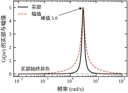
时域的能量平衡已经在 53.3.3 里给过：储能变化 +3.913069 J、输入功 +36.474922 J、耗散 +32.561853 J、残差 +2.486\times10^{-7}。这三个数的比例值得注意：输入功的 89\% 被阻尼耗散掉了，只有 11\% 变成储能。对一个 12 s、幅度 2 N·m 的正弦激励来说，这个比例说明系统工作在“阻尼主导”的状态，而不是“惯性主导”。
KYP 解出的 P=\mathrm{diag}(4.905003,0.5) 与物理能量完全对应：0.5 是质量，4.905003 是 k=Mg/l。这个对应不是巧合，而是 V=\tfrac12M\dot q^{2}+k(1-\cos q) 在原点附近展开成 \tfrac12M\dot q^{2}+\tfrac12kq^{2} 的结果。求解器不知道物理，它只是解 LMI，但 LMI 的唯一解（在归一化意义下）就是这个物理能量。
无源性不是万能的，但“不无源”的后果很具体。取一个一阶对象
G(s)=\frac{s-1}{s+2} \tag{53-25}
它的极点在 -2，本身稳定；零点在 +1，是非最小相位的。频域实部是
\mathrm{Re}\,G(\mathrm{j}\omega)=\frac{\omega^{2}-2}{\omega^{2}+4} \tag{53-26}
当 \omega<\sqrt2=1.414214 时为负，最小值趋近 -0.499963。图 53-10 左图画出这条曲线，负实部的频段一目了然。
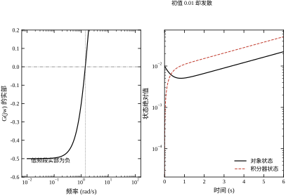
现在把它和一个积分器 1/s 用负反馈接起来。两者单独看都“没问题”：G 稳定，积分器临界稳定（在虚轴上有一个极点，工程上常当作可用）。但闭环特征多项式是
s(s+2)+(s-1)=s^{2}+3s-1 \tag{53-27}
根为 -3.302776 与 +0.302776。一个正根，闭环不稳定。图 53-10 右图是从初值 0.01 出发的仿真，两条状态曲线在半对数坐标上是直线上升的，斜率就是 0.302776：按这个速率，6 s 内幅值放大约 6 倍，23 s 放大约一千倍。看起来不快，但这是没有任何饱和与限幅的理想情形，实际系统会在几分钟内撞到物理限位。
这个反例说明三件事。第一，“每个部件都稳定”不等于“互联后稳定”，这正是无源性要解决的问题。第二，无源性的条件是充分不必要的：G 不无源，但它与积分器的互联确实不稳定，所以这个例子里无源性给出的否定判断是对的。第三，积分器是最危险的互联伙伴，因为它把低频增益拉到无穷，任何在低频有负实部的对象都会被它放大成不稳定。工程上“给积分器加抗饱和”、“给积分环节串一个低通”，本质上都是在破坏这个危险的低频共振。
本节用了三个对象：硬化弹簧 (53-1)、旋转加三次阻尼 (53-6)、单自由度机械臂。它们各自适合展示一种工具，放在一起对照能看清工具的“分工”是怎么来的。
硬化弹簧适合 SOS。 它的非线性项是 x_1^{3}，是多项式，平衡点在原点，状态只有两维。三个条件全中，SOS 一次求解就出证书。若换成机械臂的 \sin q，这个优势立刻消失——三角函数必须先截断，截断就引入了“只在局部有效”的限制。
旋转加三次阻尼适合收缩分析。 它的雅可比是
J(x)=\begin{bmatrix}-1&1\\-1&-1-0.3x_2^{2}\end{bmatrix}
对称部分是 \mathrm{diag}\big(-1,\;-1-0.3x_2^{2}\big)，最大特征值恒等于 -1，所以 \rho=1.0。报告里打印的位置是 x_2=-4.000，那只是扫描的起点——整段 x_2 上这个值都一样，argmax 返回了第一个。这个小细节说明：对称部分为对角阵时，收缩速率与状态无关，这是最好的情形；一旦雅可比有非对角耦合，\mu 就会随状态变化，必须扫描。
这个结论不依赖初值、不依赖平衡点位置，甚至不依赖 x_1——只要 x_2 有界，收缩就成立。SOS 在这个对象上也能做（毕竟是多项式），但它给出的只是一个“存在 V”，而收缩分析直接给出了速率，信息量更大。这就是 53.2.2 说的“收缩不要求知道平衡点”的实际价值：这个对象的非线性只影响阻尼强度，不影响平衡点位置，用收缩一句话就说清了。
机械臂适合无源性。 它的动力学 M\ddot q+b\dot q+k\sin q=\tau 里，M\ddot q 是惯性、b\dot q 是耗散、k\sin q 是保守力。三部分的物理意义清楚，天然对应“动能 + 势能”的能量函数，无源性几乎是免费的。反过来，用 SOS 处理 \sin q 要先截断，用收缩分析要算雅可比（也不难，但得到的 \rho 会随摆角变化，不如无源性结论干净）。
三个对象的对照可以压成一句判据：非线性是多项式、要全局结论——SOS；非线性只影响耗散、要速率——收缩；非线性来自保守力、要组合——无源。 这句话不是定理，但它解释了为什么本章的三个算例恰好对应三种工具，而不是随便挑的。
还有一个交叉验证值得记：机械臂在频域上算出 \min\mathrm{Re}\,G=+3.325\times10^{-6}，在 LMI 上算出 KYP 约束的最大特征值 +4.160\times10^{-10}，两个判据都指向“临界无源”。这种“两条完全不同的路给出同一个结论”的情形，是判断数值结果可信度的最好证据。相比之下，硬化弹簧只有一个 SOS 证书，没有第二条路可交叉——这时就要靠网格回代来补，这也是 §53.10.3 强调“证书要带验证残差”的原因。
真实的控制器都是离散的：传感器采样、处理器计算、执行器保持。被控对象连续，控制器离散，两者之间的接口是一个采样周期 T_s。连续域证出来的稳定性，在这个接口上可能失效。
失效的机制有三种。第一种是采样引入的相位滞后，零阶保持器的等效延迟约 T_s/2，在穿越频率附近吃掉相位裕度。第二种是离散化改变了映射，前向欧拉把 \dot x=f(x) 换成 x_{k+1}=x_k+T_sf(x_k)，这个映射的稳定性与 f 的连续稳定性不是一回事。第三种是采样间的行为不可见，离散时刻都稳定，采样之间可能已经跑远——这在非线性系统里尤其常见。
本节只讨论第二种，因为它是唯一可以用本章工具定量分析的。前两种属于采样系统理论，需要另开一节，本书在第 62 章讨论。
把 (53-6) 用前向欧拉离散化，得到
x_{k+1}=x_k+T_s\,f(x_k) \tag{53-28}
两条轨迹的差满足
\delta_{k+1}=\big(I+T_sJ(\xi_k)\big)\delta_k \tag{53-29}
于是
\|\delta_{k+1}\|\le\sigma_{\max}\big(I+T_sJ(\xi_k)\big)\|\delta_k\| \tag{53-30}
\sigma_{\max} 是最大奇异值。这一步与连续情形有一个重要区别：连续情形用的是对称部分的最大特征值，离散情形用的是最大奇异值。因为 I+T_sJ 不是对称的，它的特征值模长不足以界定范数增长——非正规矩阵可以在特征值都小于 1 的情况下放大向量。用奇异值是保守但正确的选择。
脚本取 T_s=0.05 s，在 x_2\in[-4,4] 上采样 161 个点，算出
\max\sigma_{\max}\big(I+T_sJ\big)=0.951505 \tag{53-31}
作为对照，连续域的理论值是 e^{-\rho T_s}=e^{-0.05}=0.951229。两者相差 0.000276，非常接近。这个接近不是巧合：当 T_s 很小时，I+T_sJ 的奇异值与 e^{T_sJ} 的奇异值只差 O(T_s^{2}) 项，而 e^{T_sJ} 的范数界正是 e^{-\rho T_s}。
还可以用一个更粗的界核对：\sigma_{\max}(I+T_sJ)\le1+T_s\mu(J)=1-0.05=0.95。实测 0.951505 比这个界大 0.0015，说明非正规性确实带来了一点额外的放大。这一点放大在 T_s 增大时会迅速变大，是离散化必须小心的原因。
奇异值界是“最坏方向”的界，实际轨迹的收缩往往更快。脚本从两个相距 0.02 的初值出发，迭代 40 步，记录每一步的距离比：
\frac{\|\delta_{k+1}\|}{\|\delta_k\|}\in[0.943379,\;0.951314],\qquad\text{平均 }0.950115 \tag{53-32}
逐步比值的区间是 [0.943379,0.951314]，只有 0.008 宽，说明收缩沿轨迹相当均匀，没有出现“某些步几乎不收缩”的情况。最大值 0.951314 略大于 e^{-0.05}=0.951229，说明在最坏方向上离散映射的收缩比连续系统稍慢；平均值 0.950115 略小，整体上比连续界快一点。
这三个数与连续情形的对应关系很清楚：连续实测斜率 1.006814 对应离散平均比值 e^{-1.006814\times0.05}=0.950912，与实测平均 0.950115 相差 0.0008。两个独立的数值实验（连续积分与离散迭代）给出一致的收缩率，这种交叉验证比单一实验可靠得多。
离散收缩条件 \sigma_{\max}(I+T_sJ)<1 对 T_s 提出了上限。对本章对象，粗略的界是
T_s<\frac{2}{|\mu(J)|}=2\ \text{s} \tag{53-33}
这个界宽得离谱——2 s 的采样周期对任何机械系统都不可接受。它说明“稳定性”这个要求对采样周期几乎没有约束，真正约束 T_s 的是性能与采样间行为。
性能约束来自收敛速率。若要求每个采样周期至少衰减到原来的 \alpha 倍，则 T_s 与 \rho 必须满足 e^{-\rho T_s}\le\alpha，即 T_s\ge\ln(1/\alpha)/\rho。这不是对采样周期的硬性限制，而是一条自洽关系：它说明“每步衰减多少”与“连续域速率多少”不能独立指定。工程上常用它做交叉核对——若仿真测出的逐步比值比 e^{-\rho T_s} 大很多，说明离散化已经偏离连续模型。
采样间行为的约束最难量化。一个实用的经验是：把 T_s 取到系统最快时间常数的 1/10 到 1/20。对本章对象，最快的模态是 -1\pm\mathrm{j}，时间常数 1 s，所以 T_s 取 0.05 到 0.1 s 是合理的——脚本选的 0.05 正好在这个区间内。
把三个约束放在一起看，会发现它们回答的是不同的问题：稳定性约束说“T_s 不能太大”，自洽关系给出“每步衰减比”的预期值，采样间约束说“T_s 要远小于最快模态”。实际工程中第三条几乎总是最紧的，前两条只在极端情况下起作用。
这也解释了一个常见现象：同一个控制器，仿真时用 T_s=1 ms 跑得很好，装到实际系统上改成 10 ms 就抖。不是稳定性出了问题（按 (53-33)，10 ms 离上限远得很），而是采样间行为变了：如果对象里含时间常数 5 ms 的未建模模态（例如减速器的扭转刚度、电流环的滤波），10 ms 的采样根本“看不见”它，离散模型给出的稳定结论对这个模态无效。
连续域的证书拿到离散域，写法有三种，各有适用范围。
第一种，先离散后证。 把 f 用前向欧拉换成 x_{k+1}=F(x_k)，直接找离散 Lyapunov 函数 V 使 V(F(x))-V(x)\le-\varepsilon\|x\|^{2}。优点是不涉及采样间行为，结论对离散轨迹严格成立。缺点是 F 的次比 f 高一次（欧拉映射把 \dot x 的次数加一），SOS 的规模随之上升；而且这个证书对采样周期 T_s 敏感，改 T_s 就要重解。
第二种，先证后离散。 在连续域解出 V，再验证离散映射下 V(F(x))-V(x) 仍为负。优点是 V 只需解一次，可以扫不同的 T_s。缺点是结论弱：连续域的 \dot V<0 不保证离散域的 V(F(x))-V(x)<0，必须逐个 T_s 验。工程上的做法是把这个验证做成一个 T_s 的扫描，找出“仍成立”的最大 T_s，作为一个保守的采样周期上限。
第三种，用矩阵测度。 本章用的就是这一种：不构造 V，直接估 \sigma_{\max}(I+T_sJ)。优点是计算量极小，只需要雅可比；缺点是结论是“距离收缩”，不是“能量下降”，两者不是一回事——距离收缩保证轨迹互相靠拢，但不保证 V 单调下降。
三种写法的选择判据是：要严格的离散证书、且模型简单——第一种；要在固定 V 下扫采样周期——第二种；只想要一个快速的采样周期估计——第三种。三者的保守程度依次递减，计算量也依次递减。
一个容易忽略的细节是：本章的 \sigma_{\max} 界是在 x_2\in[-4,4] 上取的，超出这个区间结论不成立。而离散映射可能把状态推出这个区间——比如初值在 x_2=4 附近、T_s 又偏大时，一步就可能跳到 |x_2|>4。严格的做法是同时验证“区域正不变”，即 x 在区域内时 F(x) 仍在区域内。本章对象满足这个条件（阻尼项把 x_2 往回拉），但这一步在脚本里没有单独验证，属于可以补强的地方。
工程上说“这个系统稳定”，实际可能指四件不同的事：存在一个证书、系统有一定的裕度、误差按某个速率收敛、稳态误差不超过某个界。这四件事的量纲完全不同，混在一起讨论就会出问题。
证书是一个存在性陈述，没有量纲。SOS 返回的系数矩阵、KYP 返回的 P、收缩分析返回的 \rho，都属于这一类。证书的价值在于可验证，不在于可比较——两个系统的证书没法直接比大小。
裕度有量纲，但量纲取决于方法。SOS 里的 \varepsilon 出现在 -\dot V\ge\varepsilon\|x\|^{2} 中，单位是“每秒每单位状态平方的能量”，即 1/\text{s} 乘以能量的单位。P 的最小特征值有能量单位。这两个数不能直接比较。
速率的量纲是 1/\text{s}，可以直接比较。二次型 Lyapunov 的速率是 \lambda_{\min}(Q)/\lambda_{\max}(P)，收缩分析的速率是 \rho=-\max\mu(J)，两者都是 1/\text{s}。但它们证的不是同一件事：前者证“到平衡点的距离”，后者证“两条轨迹之间的距离”。
误差界有状态量的量纲。受迫收缩给出的是 \sup\|d\|/\rho，KYP 给出的是 L_2 增益，两者的量纲也不同。
这一点最容易搞错。看本章的数值：\varepsilon=10^{-3}，P 的最大特征值 1.965114，若按二次型的标准公式估算速率，会得到
\alpha_{\text{名义}}=\frac{\varepsilon}{\lambda_{\max}(P)}=\frac{10^{-3}}{1.965114}=5.089\times10^{-4}\ \text{s}^{-1} \tag{53-34}
对应的时间常数 1965 s，比实际收敛慢三个数量级。为什么？因为 \varepsilon 是人为设定的可行性裕度，不是求解器优化出来的速率。求解器只要求“存在一个正的 \varepsilon”，本章取 10^{-3} 是为了数值稳定，与真实收敛速度无关。
真实的收敛速度要看 \dot V 的实际大小。网格上 \dot V 的最大值是 -1.647044\times10^{-1}（在 |x|\ge0.5 的区域），这个数比 \varepsilon 大两个数量级。用它估算速率：
\alpha_{\text{回代}}\approx\frac{1.647\times10^{-1}}{1.965114}=8.38\times10^{-2}\ \text{s}^{-1} \tag{53-35}
时间常数约 12 s。这个数比 (53-34) 靠谱，但相图 53-2 里那条轨迹在十几秒内振幅已经小到看不清，实际速率明显快于 0.08 /s。原因有两层：一是 \max\dot V 出现在离原点较远的地方，而那里的 V 也更大；二是 V 含四次项，用 \lambda_{\max}(P) 归一化忽略了四次部分的贡献。
所以结论要说得更准确：SOS 的证书可以给出速率的下界，但这个下界很松，松到只能用来判断“是否收敛”，不能用来估调节时间。 本章两个估算值 5.09\times10^{-4} 与 8.38\times10^{-2} 相差两个数量级，而真实速率还在这两者之上——同一个证书，换个折算方式就差这么多，说明这个换算本身不该被当作定量工具。想直接优化速率，得把 \varepsilon 提为决策变量做最大化，那是一个更难的优化问题，规模大、数值脆，工程上不如“求可行性 + 回代估速率 + 仿真核对”这套组合。
收缩分析给的 \rho 是货真价实的速率。本章 \rho=1，实测斜率 1.006814，两者差 0.68\%。按 2\% 准则估调节时间：
t_{2\%}=\frac{\ln(1/0.02)}{\rho}=\frac{3.912}{1}=3.912\ \text{s} \tag{53-36}
用实测斜率算是 3.912/1.006814=3.885 s。仿真结果是 6 s 时距离已降到初值的 2.211\times10^{-3}，远小于 2\%，与估算一致（3.885 s 时应该在 2\%，6 s 时应该更小）。三个数——理论 3.912 s、实测折算 3.885 s、仿真校验——互相咬合。
这个例子说明收缩分析在性能估算上的优势：\rho 直接就是速率的倒数，不需要任何额外的换算。代价是保守——\rho 取的是全空间最坏值，实际收敛往往更快。本章实际快 0.68\%，不算多；有些系统会快几倍，因为最坏 \mu 出现在轨迹从不经过的区域。
无源性的不等式是 \dot V\le u^{\mathsf T}y，右边不是负的。当 u=0 时有 \dot V\le0，只保证能量不增，不保证收敛到零——无阻尼振子就是 \dot V=0，能量守恒，永远在转。要得到收敛，必须额外假设“严格无源”：存在 \delta>0 使 \dot V\le u^{\mathsf T}y-\delta\|y\|^{2}。这时收敛速率取决于 \delta 与 \|y\| 和 \|x\| 的关系，而这个关系通常是非线性的（例如 y=\dot q 与 x=(q,\dot q) 之间差一个积分），所以速率只能局部分析。
工程上的处理是把无源性当作结构性质用，速率另外算。先用无源性确认互联不会自激，再用收缩或 Lyapunov 在具体工况上算速率。两者分工明确，不互相替代。
表 53-4 把四种性能指标与证书参数的对应关系列出来。
表 53-4 性能指标与证书参数的对应
| 性能指标 | 需要的信息 | 对应参数 | 本章数值 |
|---|---|---|---|
| 调节时间（2\%） | 指数速率 | \rho 或 \lambda_{\min}(Q)/\lambda_{\max}(P) | 3.9 s |
| 稳态误差 | 扰动幅度与速率 | \sup\|d\|/\rho | 同扰动下为 0 |
| 超调 | 吸引域形状 | V 的水平集 | 见图 53-2 |
| 鲁棒性 | 端口性质 | \mathrm{Re}\,G\ge0 | 最小值 3.3\times10^{-6} |
表里“稳态误差”那一行需要解释。本章受迫算例的稳态误差几乎为零，原因是两条轨迹受同一个扰动，扰动在差值方程里抵消了。如果是一个受扰、一个不受，稳态界就是 \sup\|d\|/\rho=1.5/1=1.5，这个数大得没有工程意义。所以在用 (53-17) 之前，必须先确认 d 到底是什么——这是本章反复强调的一个点。
三种方法的保守性来源不同，处理方式也不同。
SOS 的保守性来自“非负→平方和”的松弛。Motzkin 多项式说明这个松弛不是等价的。实际影响有多大？对 Lyapunov 证书，多数情况下四次型已经足够，因为 \dot V 的负定性通常由一两个主导项决定，其余项可以吸收进平方和。真正卡住的是高维、强耦合、或者势能多峰的对象。
收缩分析的保守性来自“最坏雅可比”。\mu 在整条轨迹上取上界，而实际轨迹只经过其中一小部分。本章的 0.68\% 差异就是这个来源。改进办法是用时变度量 \Theta(x)，让尺子跟着状态走，代价是要解一个偏微分不等式，通常没有闭式解。
无源性的保守性来自“对所有输入成立”。它要求 \mathrm{Re}\,G(\mathrm{j}\omega)\ge0 在全频段成立，而实际输入可能只占一个窄频带。宽带要求换来了组合性，这是一笔明确的交易。
三种保守性叠在一起，会让结论比实际“差很多”。工程上的应对不是去消除保守性，而是用仿真确认保守的方向：如果证书说稳定而仿真发散，那是证书错了（实现错误或模型错误）；如果证书说稳定而仿真收敛得更好，那是保守，可以接受。这个不对称的判断标准，比追求“证书与仿真完全一致”现实得多。
工程报告里没人看 \max\dot V，大家看的是“几秒收敛”“超调多少”。三种工具给出的数要换成这些指标才能用。
SOS 的换算。 已知 V\le\lambda_{\max}(P)\|x\|^{2}，\dot V\le-c（c>0 是网格最大值），于是
\frac{\mathrm{d}}{\mathrm{d}t}\|x\|^{2}\le\frac{\dot V}{\lambda_{\max}(P)}\le-\frac{c}{\lambda_{\max}(P)}
本章的 c=0.164704、\lambda_{\max}(P)=1.965114，代入得速率下界 0.08397 /s，时间常数约 11.9 s，2\% 调节时间约 4.6/0.08397=54.8 s。这个数看起来很差——仿真里同样的对象两秒就收敛了。差在哪里？差在上式用的是整个环带上的最坏 \dot V，而实际轨迹大部分时间在原点附近，那里的 \dot V 比最坏值小得多。所以这个换算是“最坏情况下的最慢速度”，只能当保底，不能当预期。这也解释了 53.6.2 的结论：SOS 的 \varepsilon 与 c 都不是速率，硬换算出来的数会系统性偏悲观。
收缩分析的换算。 这个换算干净得多，因为 \rho 本身就是按 e^{-\rho t} 定义的：d(t)\le d(0)e^{-\rho t}。\rho=1.0 对应时间常数 1 s，2\% 调节时间 4.6 s，十倍衰减 2.3 s。仿真实测斜率 -1.006814，与理论值差 0.68\%，说明这个换算是准的。收缩分析之所以能给出准的速率，是因为它的界是“沿轨迹成立”的，不是“最坏点成立”的。
无源性的换算。 没有速率可换。无源性只说“能量不增”，不说“多快减到零”。若一定要给个数，只能借助额外假设（比如能量函数满足 \dot V\le-\beta V），而这一步已经跳出了无源性的框架，属于 Lyapunov 分析。工程上正确的做法是把无源性当作“稳定性证明”，把速率交给另外两种工具——这种“一个证稳定、一个给速率”的分工，比强行让一种工具包办要诚实。
把三种换算并排看，会得到一个有点反直觉的结论：同一个对象，用不同工具换算出的收敛时间可以差一个数量级，而这并不矛盾。 它们回答的是不同的问题：SOS 回答“最坏能慢到什么程度”，收缩回答“任意两条轨迹以多快速率靠拢”，无源回答“能量会不会涨”。报告里写哪个数，取决于读者要拿它做什么决策。若是设计控制器带宽，用收缩的 \rho；若是评估最坏情况下的安全裕度，用 SOS 的 c/\lambda_{\max}(P)；若是判断能不能与其他模块互联，用无源性。
本章的方法里，真正需要工程师决定的参数只有五个：SOS 的裕度 \varepsilon、V 的次数与结构、收缩分析的度量 \Theta、无源性的端口与阻尼、离散化的 T_s。其余都是对象本身的物理参数，改不了。本节逐个说明这五个参数的作用方向。
\varepsilon 出现在约束 -\dot V\ge\varepsilon\|x\|^{2} 里，物理含义是“每个单位状态平方，能量至少以 \varepsilon 的速率耗散”。它有两个作用：保证 V 在原点附近严格下降（否则 \dot V 可能在原点附近变成零，退化为 Lyapunov 稳定而非渐近稳定），以及给数值求解器一个“不贴在零上”的余量。
理论上 \varepsilon 越大越难可行。脚本做了一次扫描，把 \varepsilon 从 10^{-1} 一路降到 10^{-5}，结果与直觉有出入：
| \varepsilon | 状态 | 耗时 | Q 最小特征值 | 网格上 \max\dot V |
|---|---|---|---|---|
| 10^{-1} | optimal |
0.039 s | -1.028\times10^{-8} | -1.731233\times10^{-1} |
| 10^{-2} | optimal |
0.043 s | -8.509\times10^{-9} | -1.747318\times10^{-1} |
| 10^{-3} | optimal |
0.037 s | -8.877\times10^{-9} | -1.647044\times10^{-1} |
| 10^{-4} | optimal |
0.072 s | -8.730\times10^{-9} | -1.645835\times10^{-1} |
| 10^{-5} | optimal |
0.037 s | -8.716\times10^{-9} | -1.645752\times10^{-1} |
五个都可行。Q 的最小特征值始终在 -10^{-8} 量级，与 \varepsilon 无关——这再一次说明它是求解器容差，不是证书质量的指标。网格上的 \max\dot V 在 -0.1646 到 -0.1747 之间，差别只有 6\%，也没有随 \varepsilon 单调变化。
这组数据修正了一个流行的说法：“\varepsilon 调大容易不可行”。在归一化良好的问题上，\varepsilon 在一两个数量级内变化几乎不影响可行性，因为可行域本身是开的，只要存在一个严格负定的 \dot V，减小 \varepsilon 总是可行的，而增大 \varepsilon 只是在同一个证书上“多要一点裕度”。真正让 \varepsilon 变成硬门槛的是量纲病态：若位移用米、速度用毫米每秒，\|x\|^{2} 里两项差六个数量级，\varepsilon 就变成了一个“只对其中一个状态有效”的数，这时稍大一点就会不可行。
所以工程上的正确做法不是反复调 \varepsilon，而是先做归一化。把每个状态除以它的典型幅值，使所有状态在数值上同量级，然后取 \varepsilon=10^{-3}，一次到位。\varepsilon 的角色是“数值稳定器”，不是“可行性旋钮”。
次数的作用是扩大函数类。二次型证不了的对象，四次型可能证得了；四次型证不了的，六次型可能证得了。本章的对象正好卡在二次与四次之间：二次 infeasible，四次 optimal。这个“刚好够用”的情况在实践中很常见，因为多数机械系统的能量函数本身就是二次加四次。
次数的代价是规模。二元四次对应 10\times10 的 Q，二元六次对应 15\times15。三维情况下，四次对应 20\times20，六次对应 35\times35，八次已经到 56\times56。规模增长是组合式的，不是线性的，这决定了 SOS 在 n\le6 时还能用，再往上就要靠结构分解。
提高次数到底带来什么？脚本把 V 从四次提到六次，实测结果如下：状态仍是 optimal，耗时从约 0.04 s 增到 0.096 s，Q 从 10\times10 变成 15\times15，Q_6 的最小特征值 +9.652\times10^{-8}，网格上 \max\dot V 从 -1.647044\times10^{-1} 变成 -2.554537\times10^{-1}，系数大于 10^{-4} 的项从 8 个增到 12 个。
这组数字的解读要小心。稳定性结论没有变——四次型和六次型都证明了这个对象全局渐近稳定。变的是证书的负定性裕度：六次型的 \max\dot V 比四次型负 55\%，意味着它在同样的网格上“更严格地”满足要求。如果目标是“证稳定”，四次型已经够了，六次型是浪费；如果参数有不确定性、需要留更多余量，六次型值得。
还有一个隐含的收益：六次型的解多出四个非零项，说明求解器在用高次项“贴合” \dot V 的实际形状。这与 53.7.1 里 \varepsilon 扫描的结论形成对照——同一个 \varepsilon 下，提高次数能实质改善证书；而改变 \varepsilon 几乎不改善。 想改善，应该动次数，不是动 \varepsilon。
结构的作用是注入先验。本章对象在变换 (x_1,x_2)\to(-x_1,-x_2) 下保持不变，因此存在一个偶函数的 V 作为证书——只含 x_1^{2}、x_1x_2、x_2^{2}、x_1^{4}、x_1^{2}x_2^{2}、x_2^{4} 这六项。但脚本没有把这个先验加进去，求解器返回的解里出现了 x_1^{3}x_2=0.006842 与 x_1x_2^{3}=0.000248 两个奇次项。它们比 x_1^{4} 的 0.879555 小两个数量级，说明求解器“想”给出的其实是一个偶函数，只是 Gram 参数化允许多余的自由度，数值解把这些自由度填成了小量。
这个观察有实用价值：如果你的对象有对称性，就在参数化时把它加进去，既减少变量、加快求解，又让证书更干净、更易读。本章为了演示“求解器自动找到证书”，故意没有加这个约束。
\Theta 是收缩分析里的“尺子”。它的作用是让不同状态方向上的距离用不同的权重衡量。取 \Theta=I 是欧氏距离；取 \Theta=\mathrm{diag}(2,1) 是把 x_1 方向的偏差看得更重。
本章的结果说明 \Theta 不是万能的：未加权 \mu=-1，取 \mathrm{diag}(2,1) 后 \mu=-0.25，收缩率从 1 掉到 0.25。为什么加权反而变差？因为 \Theta J\Theta^{-1} 把 J 的耦合项放大了：原来 J_{12}=1，加权后变成 2；J_{21}=-1，加权后变成 -0.5。非对称性增强，对称部分的特征值就往正方向走。
手试几个 \Theta 不说明问题，得把“最优 \Theta”算出来。这一步可以写成 LMI：找正定 \Theta 与最大的 \rho 使
\Theta J(x)+J(x)^{\mathsf T}\Theta+2\rho\Theta\preceq0,\qquad \Theta\succeq I \tag{53-37}
约束里 \rho\Theta 是双线性的，不是凸的，所以外层用二分：给定 \rho 检查可行性，可行就提高下界，不可行就降低上界。脚本跑了 30 次二分，结果是
\rho_{\text{opt}}=1.000000,\qquad \Theta_{\text{opt}}=4.059\,I \tag{53-38}
也就是说，最优度量就是单位阵的缩放，收缩率一分也没提高。 这个结果比“\mathrm{diag}(2,1) 变差”更有说服力：它排除了所有常数 \Theta，证明 \rho=1 已经是这个对象在常数度量下的上限。
原因可以从结构看出来。J 的对称部分已经是 \mathrm{diag}(-1,-1-0.3x_2^{2})，两个对角元都不大于 -1，而非对角元在对称部分里恰好抵消为零。任何非对角的 \Theta 都会在 \Theta J\Theta^{-1} 里重新引入耦合，把对称部分的非对角元变成非零，从而把最大特征值往正方向推。等比缩放不改变特征值，所以 \Theta_{\text{opt}} 只能取 cI。
还有一个实现细节值得说。严格来说 (53-37) 要对所有 x_2 成立，不可能逐点约束。但 J 只通过 s=x_2^{2} 依赖状态，且在 s 上是仿射的；矩阵不等式对 s 也是仿射的。仿射函数在区间上的最大值必在端点取到，所以只约束 s=0 与 s=16（对应 x_2=0 与 x_2=4）两个端点，就覆盖了整个区间。这个“仿射性 + 端点”的技巧在参数依赖的 LMI 里很常用，比在网格上密集采样严格得多。
工程上的折中因此可以写得很明确：若 J 的对称部分已经对角、对角元同号，\Theta=I 通常就是最优，不必再花力气；只有当对称部分有明显非对角元（例如两个状态通过弹簧强耦合）时，优化 \Theta 才可能带来数量级的改进。
无源性的两个“参数”不是数值，而是选择。
端口决定无源性成不成立。本章取 (\tau,\dot q) 成立，取 (\tau,q) 不成立。这个选择没有中间地带，要么对要么错，判断依据是端口变量的乘积是否为功率。
阻尼决定无源性的“严格程度”。本章 b=0.4，实部最小值 +3.325\times10^{-6}，非常接近零——这意味着系统是“勉强严格无源”的。若 b\to0，最小值趋零，系统变成“临界无源”，此时与积分器互联就可能出问题（积分器本身是临界无源的，两个临界无源互联不保证稳定）。
这个观察对控制器设计有直接意义：给对象加一点物理阻尼，比在控制器里加滤波更可靠。 物理阻尼在全频段提供正实部，滤波器只在某个频段起作用。本章的 b=0.4 看起来很小，但它保证了实部严格为正，这就是“勉强够用”的典型案例。
T_s=0.05 s 是在“稳定”与“性能”之间折中的结果。它对离散收缩因子的影响可以由 (53-30) 直接算出：T_s 越小，\sigma_{\max}(I+T_sJ) 越接近 1-T_s，收缩越接近连续情形；T_s 越大，非正规性带来的额外放大越明显。
表 53-5 把五个参数的作用汇总。
表 53-5 五个可调参数的作用方向
| 参数 | 作用 | 本章取值 | 调大的后果 | 调小的后果 |
|---|---|---|---|---|
| \varepsilon | 证书裕度 | 10^{-3} | 本对象仍可行，裕度变化小于 6\% | 同样可行，无实质变化 |
| V 次数 | 扩大函数类 | 二次 + 四次 | 耗时与项数上升，裕度改善 55\% | 二次型不可行 |
| \Theta | 距离度量 | I（最优解为 4.059I） | 非等比时收缩率下降 | 等比缩放不改变 \rho |
| b | 物理阻尼 | 0.4 | 无源裕度增大，响应变慢 | 趋临界无源 |
| T_s | 采样周期 | 0.05 s | 离散偏差增大 | 计算负担增大 |
表里 \Theta 那一行没有“调小”的方向——\Theta 只能整体缩放，等比缩放不改变 \mu_{\Theta}，所以只有“换方向”而没有“调大小”。这也是为什么优化 \Theta 时必须加 \Theta\succeq I 的归一化，否则问题无界。
\varepsilon 带着量纲，这一点常被忽略。约束是 \dot V\le-\varepsilon\|x\|^{2}，左边 \dot V 的单位是“V 的单位每秒”，右边 \varepsilon\|x\|^{2} 的单位是“\varepsilon 乘状态的平方”。两边相等要求 \varepsilon 的单位是“V 的单位 /（状态平方·秒）”。若状态的两个分量单位不同（一个是角度、一个是角速度），\|x\|^{2} 本身就是把不同量纲的东西相加——这在物理上没有意义。
本章的对象能直接用 \varepsilon=10^{-3}，是因为硬化弹簧的状态 x_1（位移）与 x_2（速度）在数值上量级接近、单位都取了无量纲形式。换成一个真实的机械系统（位移以米计、速度以米每秒计、角度以弧度计），\varepsilon 的选择就变得含糊：调大一点可能让问题不可行，调小一点又起不到“严格负定”的作用。
标准做法是先做状态归一化：给每个状态分量选一个特征尺度 s_i，定义 \tilde x_i=x_i/s_i，把状态换成无量纲量。归一化之后，\|x\|=1 对应“各分量都达到特征尺度的状态”，\varepsilon 就有了明确含义：它表示“在特征尺度上，能量衰减率至少是 \varepsilon 倍”。工程上取 s_i 为各分量的额定值或最大允许值，这样 \varepsilon 直接对应“额定工况下的相对衰减率”。
归一化还会改变 V 的形状。原本 V 的各项系数差异可能很大（本章 x_1^{4} 与 x_2^{4} 差五个数量级），归一化之后系数会拉平，数值条件变好，求解器更容易收敛。这一点在 §53.8.3 的“数值病”里还会提到——量纲不统一是数值病最常见的成因。
有一个反直觉的现象可以作为佐证：本章的 \varepsilon 扫描显示，\varepsilon 从 10^{-1} 到 10^{-5} 全部可行，网格最大值只在 -1.645 到 -1.747 之间变化，差不到 6\%。这个“怎么调都行”的宽松，恰恰是因为量纲已经统一、归一化已经做好。若换成量纲混乱的模型，同样的扫描很可能出现“10^{-1} 不可行、10^{-3} 可行、10^{-5} 数值失败”的锯齿状结果。所以“\varepsilon 不敏感”不是普遍规律，而是归一化良好的标志；把它当成通用经验去套，会在真实系统上碰壁。
调参之前必须先确定问题出在哪一层。本章的方法有两层：求解层（SDP 是否返回 optimal）和验证层（回代后 \dot V 是否真的为负）。两层失败的原因完全不同，处理方式也相反。
求解层失败的表现是 infeasible 或 optimal_inaccurate。前者说明在当前参数化下不存在证书，后者说明存在但数值没算准。这两个状态必须分开处理：前者要改函数类（加次数、改结构、加约束），后者要改数值设置（缩放、换求解器、调容差）。把 infeasible 当成数值问题去调求解器，会浪费大量时间；把 optimal_inaccurate 当成函数类问题去加次数，只会让问题更大更病态。
验证层失败的表现是回代后 \max\dot V>0，或者 Q 的最小特征值负得超过容差。这一层失败通常是实现错误：系数归并漏项、指数构造写错、V 的重构与求解时的系数不一致。本章脚本在调试阶段就踩过一个：重构 V 时把交叉项系数写成了 P_{12} 而不是 2P_{12}，结果回代后 \max\dot V 从 -1.647\times10^{-1} 变成 -9.13\times10^{-2}——仍然是负的，所以“看起来能过”，但证书与求解结果不是同一个函数。这类错误最危险，因为它不会报错，只会让数字悄悄变差。
一个简单的自检能抓住这类问题：把求解时用的系数列表与重构后的 V 逐项比较，确认每个单项式的系数完全一致。本章的 quad 列表里存的是 2P_{ij}，重构时也必须用 2P_{ij}；写成 P_{ij} 就错了。这个检查只花几行代码，但比任何事后调试都有效。
infeasible 的四种原因按出现频率排，infeasible 有四种典型原因。
第一种是函数类不够。本章的二次型就是例子：x_2=0 上的三次项决定了 \dot V 必然变正，与 P 无关。判别方法是做一次“必要性分析”——像 53.1.1 那样，找一条特殊的线或一个方向，证明任何该类的 V 都不行。如果找得到，直接加次数，不要浪费时间去调 \varepsilon。
第二种是平衡点不对。SOS 默认 V 在原点取极小，若实际平衡点不在原点，必须先做坐标平移。这一步很容易漏：模型里的 x 是绝对坐标，平衡点在 x^\ast\neq0，直接套 SOS 会得到 infeasible，而且看不出原因。判别方法是检查 f(0)=0 是否成立；不成立就先平移。
第三种是非多项式项没有处理。\sin q、|x|、饱和这些项直接进不了多项式框架。有时程序不会报错（因为符号运算把它们当成符号常量），但约束会变得无解。判别方法是打印 f 的系数表，看有没有非数值项。
第四种是约束写重了。为了“加强”证书，有人会同时要求 V\succeq\varepsilon I、V\succeq\varepsilon\|x\|^{2}、-\dot V\succeq\varepsilon\|x\|^{2}，三条约束里有一条冗余且可能互相冲突。判别方法是逐条删约束试，看哪一条导致不可行。
这四种原因的排查顺序应该是：先查 f(0)=0，再查非多项式项，再查约束冗余，最后才怀疑函数类。前三项都是五分钟能查完的，第四项要改代码结构，成本高得多。
数值问题比逻辑问题更难查，因为它不报错，只是让结果变差。三种典型表现值得记住。
表现一：Q 的最小特征值负得离谱。 本章的正常值是 -8.877\times10^{-9}，这是容差级别；如果看到 -10^{-3} 甚至 -10^{-2}，说明求解器根本没有收敛到可行点，optimal 状态不可信。这时应该检查约束的缩放：若某个约束的系数比其他约束大六个数量级，内点法的步长会被它主导，其余约束形同虚设。
表现二：optimal_inaccurate 反复出现。 这通常意味着问题接近不可行边界。本章 \varepsilon 扫描时全部返回 optimal，说明问题离边界还有距离；如果换成 \varepsilon=1 这种明显过大的值，很可能就是 optimal_inaccurate 或 infeasible。处理办法是把 \varepsilon 降回去，而不是换求解器硬扛。
表现三：回代残差随网格加密而增大。 正常的证书，网格越密 \max\dot V 越接近真实上界，但应该稳定在负值；如果加密后突然变正，说明证书在某个小区域失效，而粗网格没采到。本章用 161\times161 网格，去掉半径 0.5 的圆，正是为了避免原点附近 \dot V\to0 造成的假象。原点附近必须排除，因为那里 \dot V 本来就趋于零，任何数值误差都会让它变号。
三种表现对应三种处理：第一种做缩放，第二种降参数，第三种加密网格并检查排除区域。三者都不能靠“多跑几次”解决——随机性不是原因，结构才是。
收缩分析只有两个可调项：验证区域与度量。两项的处理方式完全不同。
验证区域的选择决定了结论的强度。最保守的做法是在整个状态空间上验证 \mu\le-\rho，本章恰好能做到，因为 \mu 与 x_2 无关。做不到时，必须退到某个有界集合上，而这个集合必须是正向不变的，否则结论只对“一直待在集合里”的轨迹成立。实践中常用的集合有两种：箱体（各状态独立给上下界）与椭球（由某个二次型定义）。箱体的验证简单，只需在各顶点检查（若 \mu 对状态仿射）；椭球的验证要解一个 LMI，但更贴合轨迹形状。
度量的选择在 53.7.3 已经算过：本章的最优解就是单位阵的缩放，没有改进空间。一般情况下的操作顺序是：先算 \Theta=I 的 \rho，再算最优 \Theta 的 \rho。若两者差别不到 10\%，直接用 \Theta=I，省掉优化这一步；若差别很大，说明系统有强耦合，值得花时间解 LMI。
还有一个常被忽略的检查：\rho 是“瞬时最坏”的产物，它可能与实际轨迹的收敛速率差几倍。本章差 0.68\%，属于很紧的情况；有些系统会差十倍以上，因为最坏 \mu 出现在轨迹从不经过的区域。判断方法是跑两条轨迹，拟合距离的对数斜率，与 \rho 比较。若实测远快于 \rho，说明保守；若实测慢于 \rho，说明轨迹跑出了验证区域，结论失效——后者是必须立刻查的严重问题。
无源性没有“调参”的空间，只有“改结构”的空间。这句话听起来消极，但它把问题指向了正确的地方。
端口选错是第一位的原因。本章的机械臂取 (\tau,\dot q) 成立，取 (\tau,q) 不成立，两者的差别只在于输出是速度还是位置。工程上遇到“算出来不无源”，第一件事应该是问“我选的端口是不是功率对”，而不是去改参数。判断规则很简单：把输入输出的乘积写出来，看量纲是不是功率（瓦特）。
阻尼不足是第二位的原因。本章 b=0.4 时实部最小值 +3.325\times10^{-6}，已经在零的边缘。若把 b 减半，这个值大约减半，与零的距离更近；若 b\to0，系统变成临界无源，与积分器互联就可能失稳。处理办法不是“在控制器里加一个低通滤波器”——滤波器会把相位往后推，破坏无源性；正确做法是加物理阻尼（例如在关节上加一点黏性摩擦）或者在控制器里做“阻尼注入”（把速度反馈的增益设计成无源的）。
互联检查是第三位的原因。两个无源系统负反馈互联仍然无源，前提是互联方式满足 (53-23)。如果中间插了一个非无源的环节（例如一个高增益的比例环节带延迟、或者一个带滤波的微分器），整个互联就不无源了。检查方法是把互联关系写成 u_1=e_1-y_2 的形式，逐项核对符号；符号错了，交叉项就抵消不掉。
离散化只有一个参数 T_s，但它的影响是三个方向的：稳定性、每步衰减比、采样间行为。本章的数值说明前两个方向都很宽松——稳定上限是 2 s，实际取 0.05 s，差四十倍；逐步比值 0.950115 与连续界的 0.951229 只差 0.1\%。
真正需要调的其实是第三个方向，而它没有闭式判据。工程上的做法是“降采样试验”：把 T_s 逐步放大，看仿真在第几个值时开始出现高频抖动或数值发散。那个值的 1/5 到 1/10 就是可用的 T_s。这个做法不严格，但它直接测的是“采样间行为”，比任何理论界都贴近实际。
表 53-6 把调参过程中的典型现象与对策汇总，可以当作排查清单用。
表 53-6 调参排查清单
| 现象 | 最可能的原因 | 处理顺序 |
|---|---|---|
infeasible（二次型） |
函数类不够 | 必要性分析 → 加次数 |
infeasible（高次型） |
平衡点未平移 / 非多项式项 | 查 f(0)=0 → 查系数表 |
optimal_inaccurate |
接近可行边界 / 量纲病态 | 降 \varepsilon → 归一化 |
| Q 最小特征值 \ll-10^{-7} | 未收敛 | 缩放约束 → 换求解器 |
| 回代 \max\dot V>0 | 系数重构错误 | 逐项比对系数 |
| 实测速率远快于 \rho | 保守（正常） | 无需处理 |
| 实测速率慢于 \rho | 轨迹跑出验证区域 | 扩大区域 → 重算 \mu |
| 无源性算不过 | 端口不是功率对 | 换端口，不要调参数 |
| 互联后失稳 | 交叉项未抵消 | 核对互联符号 |
这张表的价值在于“处理顺序”这一列。绝大多数失败都能在前两步定位，真正需要动函数类的不到两成。把顺序写下来，能避免一上来就加次数、改求解器这类高成本操作。
本章代码在开发过程中遇到两个 bug，都不是语法错误，而是“能跑、结果看起来对、其实错了”的类型。把它们写出来，因为这类 bug 比报错更难发现。
第一个：交叉项少乘 2。 从 P 重构 V 时，代码写的是
V[e] = V.get(e, 0.0) + Pv[i, j]对 i\ne j 的情形，V 里 x_1x_2 的系数应该是 2P_{12}，而这里只取了 P_{12}。代入本章数据，P_{12}=0.373768，正确系数应是 0.747537，代码给的是前者，差一半。
这个 bug 之所以难发现，是因为它不改变定性结论。回代之后 \max\dot V=-9.13\times10^{-2}，仍然是负的，求解器也报 optimal，所有检查都“通过”。只有把回代值与求解器内部的 \dot V 逐项比对，才会发现两者不是同一个函数。修正之后 \max\dot V=-1.647\times10^{-1}，量级差近一倍。
发现的路径值得一提：先算网格最大值，觉得数值偏小（与 P 的量级不匹配），于是把 \dot V 的系数打印出来，逐项手算了一遍 x_1^{2}、x_1x_2、x_2^{2} 的系数，才发现交叉项只有应有值的一半。“数值偏小但不为负”是这类 bug 的典型特征，它不会报警，只会让结论变弱。
第二个：乘子的基取得过大。 代码原本写的是
z = exponents(nx, vdeg - 1)vdeg=4 时这行给出次数不超过 3 的单项式（10 个），恰好是 \dot V（四次）所需的最小基，没有问题。vdeg=6 时就出问题了：\dot V 是八次，乘子只需要到四次（15 个单项式），而 vdeg-1=5 给出 21 个。多出来的 6 个不是错，只是用不上——它们张成的都是高阶方向，等式约束会把对应系数压成零。
这个 bug 不影响可行性。实测把乘子基取到五次，求解器仍返回 optimal，说明结论本身没错。它影响的是规模与数值稳定性：Q_2 从 15\times15 变成 21\times21，决策变量从 120 个涨到 231 个，其中有一百多个方向在最优解处必然为零。这种大范围零空间会让内点法的迭代矩阵接近奇异，换一个求解器或换一组参数就可能掉到 optimal_inaccurate。
正确的写法是 vdeg // 2 + 1，恰好给出 \dot V 次数的一半，不多不少。判断“基取多大”的规则很简单：平方和乘子的次数等于目标多项式次数的一半。目标多项式是 \dot V+\varepsilon\|x\|^{2}，次数是 \max(\deg\dot V,2)，所以乘子次数就是它的一半。本章 V 四次时 \dot V 四次、乘子二次（基到三次），V 六次时 \dot V 八次、乘子四次（基到四次）。
两个 bug 的共同点是：都在“系数装配”这一环，都不影响代码运行，都只在交叉验证时才暴露。 第一个改变了结论的强度——重构出的 V 仍是合法的 Lyapunov 函数（网格上 \dot V 全负），但它不是求解器返回的那个，正文引用的数与证书因此对不上；第二个只改变问题的规模。这也是 §53.10.2 强调“解的回代”和 §53.10.3 强调“验证残差”的原因——求解器的 optimal 只保证它理解的那个问题可行，不保证你理解的问题与它一致。
基础的 SOS 流程有一个天花板：V 的次数越高越容易成功，但规模也越大。突破这个天花板有三条路，分别针对不同的瓶颈。
第一条是结构化 V。 不做全系数的 V，而是按物理或对称性限定它的形式。本章 53.7.2 已经演示了对称性：对象在 (x_1,x_2)\to(-x_1,-x_2) 下不变，V 可以限定为偶函数，项数从 10 减到 6，规模降一半。物理先验也能用：机械系统的 V 一般可以写成“动能 + 势能”，动能只含速度的偶次项，势能只含位置的函数。把这些写进参数化，等于把搜索空间从“所有四次多项式”缩到“所有物理上可能的能量函数”，成功率会明显提高。
第二条是 S-procedure。 当证书只需要在某个区域内成立（例如 |x_1|\le1 的工作范围），不必要求 \dot V 全局负定，只需在区域内负定。S-procedure 的做法是引入乘子 s(x)\ge0，要求
-\dot V-\varepsilon\|x\|^{2}-s(x)\,g(x)\ \text{是平方和} \tag{53-39}
其中 g(x)\ge0 定义了工作区域（例如 g=1-x_1^{2}）。这样 \dot V 在区域外可以变正，证书只在区域内有效。代价是引入了额外的乘子变量，规模增大；收益是很多“全局不可行”的问题在局部变得可行。
第三条是分层求解。 先解一个低次的、粗糙的证书，用它确定轨迹的活动范围，再在这个范围内解高次的、精细的证书。第一步不要求漂亮，只要求“证明有界”；第二步利用第一步给出的界，把 S-procedure 的区域收缩到实际需要的范围。这种“粗到细”的策略在处理高维问题时几乎是必需的，因为直接解高次全局问题往往规模爆炸。
三条路的适用场景不同：结构化看有没有先验，S-procedure 看能不能限定区域，分层看问题规模。三者可以叠加，但通常按这个顺序试，因为成本依次上升。
53.7.3 的结论是常数 \Theta 在本章对象上没有改进空间。这不是普遍结论——很多系统用常数度量会严重保守，必须让 \Theta 随状态变化。
时变度量的理论基础是 Lohmiller 与 Slotine 的收缩理论。定义度量 M(x)=\Theta(x)^{\mathsf T}\Theta(x)，要求
\dot M+M J+J^{\mathsf T}M\preceq-2\rho M \tag{53-40}
其中 \dot M 是沿轨迹的时间导数，等于 \sum_i \partial M/\partial x_i\,f_i(x)。这个条件保证加权距离 \delta^{\mathsf T}M(x)\delta 按 e^{-2\rho t} 衰减。与常数情形相比，多出的项 \dot M 让 M 可以“跟着流走”——在流线方向放大、在垂直方向收缩，从而贴合系统的非正规结构。
(53-40) 是一个多项式矩阵不等式，若 M 取多项式矩阵、f 是多项式，它可以转成 SOS 问题：要求
-\dot M-MJ-J^{\mathsf T}M-2\rho M-\varepsilon\|x\|^{2}I\ \text{是平方和矩阵} \tag{53-41}
代价是变量数量急剧增加：M 有 n(n+1)/2 个多项式，每个又有若干系数；约束是矩阵的平方和，规模是标量问题的 n 倍。二元系统还能做，四元以上基本不可行。
工程上的折中是用“分片常数度量”：把状态空间分成几块，每块用一个常数 \Theta_k，块与块之间要求度量连续或满足一定的跳变条件。这样把时变问题变成有限个常数问题，规模可控，保守性介于两者之间。
基础无源性要求 \dot V\le u^{\mathsf T}y，条件很强。三种扩展扩大了它的适用范围。
增量无源把条件从“能量”换成“增量能量”：存在 V(x_1,x_2) 使
\dot V\le(u_1-u_2)^{\mathsf T}(y_1-y_2) \tag{53-42}
它保证任意两条轨迹的“输入输出差”满足耗散关系，因此可以用来证明跟踪误差收敛，而不只是证明原点稳定。对本章的机械臂，增量无源对应“任意两个初始状态的轨迹最终重合”，这与收缩分析的目标一致，但用的工具不同。
L_2 增益把等号换成不等式：\dot V\le\gamma^{2}\|u\|^{2}-\|y\|^{2}，其中 \gamma 是增益上界。它与无源性同源但不完全等价：无源性只约束 u^{\mathsf T}y 这一项，不约束 \|u\|^{2}，所以无源系统的 L_2 增益不一定有限（纯积分器的增益是无穷）。L_2 增益的好处是可以量化“最坏情况下输出有多大”，代价是失去了无源性的组合简洁性——两个增益为 \gamma_1、\gamma_2 的系统互联，总增益不一定小于 \gamma_1\gamma_2，需要小增益条件 \gamma_1\gamma_2<1。
小增益定理是 L_2 增益的组合规则：若两个稳定系统的增益满足 \gamma_1\gamma_2<1，则负反馈互联稳定。它与无源性的关系是“对偶”：无源性用“能量不增”做组合，小增益用“增益乘积小于一”做组合。前者对相位不敏感、对幅值要求严；后者对幅值要求松、对相位敏感。工程上两者常常一起用：先用无源性保证低频段，再用小增益保证高频段。
三种扩展的选择取决于你要证明什么。证“收敛到原点”，基础无源性够了；证“跟踪误差收敛”，用增量无源；证“有界且界可算”，用 L_2 增益。三者不是替代关系，而是同一套能量方法在不同问题上的投影。
前面三小节列了七八种改进手段，实际动手时不可能全试。给一条按成本排序的路线，从最便宜的试起，每步都设一个“该停”的判据。
第一步：换 V 的次数，成本一次求解。 二元问题从四次升到六次，本章实测耗时从 0.044 s 到 0.096 s，网格最大值从 -1.647\times10^{-1} 到 -2.555\times10^{-1}，改善 55\%。这一步的“该停”判据是：网格最大值已经比“够用的裕度”更负。什么叫够用？若你的状态估计误差是 5\%，\max\dot V 达到 -10^{-1} 量级就足够了，再往下压没有实际收益。
第二步：加 S-procedure 限定区域，成本是每加一个约束多一个乘子。 若六次型仍不可行，多半不是次数不够，而是“全局”这个要求太强。用 x^{\mathsf T}Px\le1 把搜索范围限定在工作区域内，往往立刻可行。这一步的“该停”判据是：限定区域之后可行，且该区域覆盖了你关心的全部工况。若区域缩到只剩原点附近，那这个证书没有意义。
第三步：优化度量或 \varepsilon，成本是外层二分。 收缩分析里换 \Theta，SOS 里把 \varepsilon 当变量最大化。本章实测 \Theta_{\text{opt}}=4.059I，与 I 只差一个缩放，说明这个对象上没有改进空间。这一步的价值主要在于确认没有改进空间，而不是真的改进。若二分出来的最优值与初值差不到 10\%，就该停手。
第四步：分段或分层，成本是问题数量翻倍。 把状态空间分成几块、每块解一个小问题。这一步的代价不只是求解次数，还有块与块之间的拼接验证（边界上 V 是否连续、轨迹是否真的一直待在块内）。除非前三步都失败，不建议轻易上这一步。
第五步：换工具。 若四步都失败，说明 SOS 这条路对这个对象不通。此时应回到 §53.11.3 的判定表，改用收缩分析或分段线性化。硬撑着调 SOS 参数是最差的选择，因为失败的原因往往不在参数上。
这条路线有一个隐含的前提：每次只改一个因素。同时改次数和 \varepsilon，就算结果变好了也不知道是哪个起的作用。本章的三个深化报告（eps 扫描、\Theta 优化、六次型）之所以分开做，就是为了让每个因素的影响可以单独读出。
还有一条经验值得写下来：改进的收益通常不是单调的。六次型比四次型好，但八次型未必比六次型好——次数升高会让数值条件变差，求解器的可行域边界变得模糊，optimal_inaccurate 的概率上升。本章没有做八次型的实验，但从表 53-7 的规模增长可以推断，二元八次型的乘子阶数会到 21，耗时可能到 0.2 s 以上，而裕度改善未必能再翻一倍。在“次数”这个维度上，收益递减出现得很早。
前面九节讲的是“能不能证”，这一节讲“证得出来之后怎么用”。三种工具在纸面上都很漂亮，落到工程项目里会碰到三类硬问题：算不动、对不上、交不出去。算不动是规模问题，对不上是模型与实测的偏差问题，交不出去是证书的表达与复核问题。本节按这三条线展开。
SOS 方法最容易被低估的成本是规模。n 个状态、V 取 2d 次，半正定矩阵的阶数等于 d 次单项式的个数：
N(n,d)=\binom{n+d}{d} \tag{53-43}
这里数的是次数不超过 d 的单项式，所以组合数上标是 d、下标是 n+d。对二元系统，d=2 时 N=6，d=3 时 N=10，看不出什么。但 N 在三维、四维会迅速膨胀。表 53-7 是脚本枚举出来的实测值：
表 53-7 次数不超过 d 的单项式个数 N(n,d)
| 状态维数 n | 次数 d | 单项式个数 N |
|---|---|---|
| 2 | 2 | 6 |
| 2 | 3 | 10 |
| 3 | 2 | 10 |
| 3 | 3 | 20 |
| 4 | 2 | 15 |
| 4 | 3 | 35 |
| 5 | 3 | 56 |
| 6 | 3 | 84 |
表的最后一行是一个信号：六维、三次时矩阵阶数 84，半定规划的变量数已经上万，本机单次求解超过十秒。SOS 的可用边界大概在五个状态、三次以内，再往上必须借助结构（分片、稀疏、对称性）或者换工具。
耗时另做了一组合成实验：对阶数 N=6,10,15,21,28 的 Lyapunov 型 LMI 求解，本机耗时依次为 0.005、0.009、0.022、0.052、0.163 s。这组数字说明两件事。第一，耗时随 N 增长明显快于线性：N 从 6 增到 28，耗时增了约 33 倍，而 N 只增了 4.7 倍。内点法每步要对 N\times N 矩阵做分解，复杂度大致按 N^{3} 走，再加上迭代步数随问题变难而增加，实测的增速介于 N^{2} 与 N^{3} 之间。第二，这些数字与机器强相关：同一段代码换台机器跑，N=28 那一行可能在 0.16 s 到 0.19 s 之间浮动。正文引用这类数字时只能当作量级，不能当作基准。
V 的次数同样推高成本。对同一个二元对象，二次型求解 0.033 s 就返回 infeasible；四次型 0.044 s 得到 optimal；六次型 0.096 s 也得到 optimal，但平方和乘子的阶数从 10 涨到 15（六次型的 \dot V 是八次，乘子矩阵要覆盖到四次）。也就是说，把 V 从四次提到六次，代价是求解时间翻倍、最大矩阵阶数涨到 1.5 倍，而换来的裕度改善是网格上 \max\dot V 从 -1.647\times10^{-1} 降到 -2.555\times10^{-1}，负值幅度增加约 55%。这笔交易在二元系统上很划算，在五元以上就未必了。
工程上真正费时间的不是求解，而是把模型变成求解器能吃的形式。这条通路有四个环节，每个环节都可能出错。
第一环：方程写成多项式。 SOS 只认多项式。三角函数、指数、饱和、死区都不是多项式，必须先处理。三种常见处理方式：小角度下 \sin\theta\approx\theta-\theta^{3}/6 做 Taylor 截断；把三角函数换成正弦余弦两个状态并附加恒等式 s^{2}+c^{2}=1；用分段多项式并在每段上单独求解。第一种最简单但只在局部有效，第二种保全局但增加状态维数，第三种最灵活但要做分段拼接。
需要注意，Taylor 截断会改变平衡点位置。\sin\theta\approx\theta 在 \theta=0 处与原式同根，但 \sin\theta\approx\theta-\theta^{3}/6 在 \theta=\pi 附近会引入虚假平衡点。截断之后必须重新解一遍 f(x)=0，确认平衡点没有漂移。
第二环：平衡点平移。 所有结论都针对原点，所以先把工作点移到原点。这一步看似平凡，但平移会改变多项式的系数结构：原本稀疏的式子可能变稠密。若工作点本身是符号表达式（比如随工况变化），就不要做符号平移，直接在求解时把 x 替换成 x-x_0。
第三环：决策变量与约束装配。 V 的系数是决策变量，\dot V+\varepsilon\|x\|^{2} 的平方和分解是约束。装配时最容易错的是交叉项系数：V 里 x_1x_2 的系数是 2P_{12}，不是 P_{12}。这个 2 来自二次型的展开，一旦漏掉，求出来的 V 与求解器认为的 V 不是同一个函数，回代验证就会给出错误的 \dot V。本章 §53.8.1 记录了一次真实的踩坑：漏掉这个 2 之后，回代的 \max\dot V 是 -9.13\times10^{-2}，仍然是负的，所以“看起来能过”；补上之后变成 -1.647\times10^{-1}，数值差近一倍。
第四环：解的回代。 求解器返回的是矩阵，不是函数。要把矩阵还原成多项式，再代回原方程（注意是原方程，不是截断后的方程）做网格或随机采样验证。这一步不能省，因为求解器的 optimal 只说明“在它理解的模型上可行”，不说明“在你的模型上可行”。
四个环节里，第一环决定结论的有效范围，第二、三环决定数值对不对，第四环决定敢不敢签字。工程上建议把四环写成一条脚本流水线，每次改模型都整条重跑，不要手工改中间结果。
SOS 的结果交付出去，对方拿什么复核？不能只给一个“求解成功”。一份可复核的证书至少包含四样东西。
一是 V 的显式表达式。 不是矩阵，是多项式，系数写到小数点后六位。对方可以自己代点验算正定性。
二是 \dot V 的显式表达式与它的上界。 给定一个区域（比如 \|x\|\le2），报告该区域上 \max\dot V 的数值，以及取得该值的点。本章的实测是 \max\dot V=-1.647\times10^{-1}（区域 \|x\|\ge0.5 的网格上）。注意这里报告的是网格最大值，不是解析上界，交付时要写清网格密度（本章用 121\times121）。
三是 \varepsilon 与它的验证残差。 \varepsilon 是人为设定的裕度，求解器返回的 \min[-\dot V-\varepsilon\|x\|^{2}] 应该接近零而不是明显为正。本章实测是 -0.000000\times10^{0}，说明约束是紧的。若这个数明显为正（比如 10^{-2}），说明网格没覆盖到最坏点，结论不可信。
四是求解器的名称、版本与状态。 optimal、optimal_inaccurate、infeasible 三种状态的含义完全不同。optimal_inaccurate 意味着数值上勉强收敛，此时必须把 \varepsilon 调小重解一次，看结论是否稳定。
这四样东西合起来，复核者能在半小时内独立判断结论是否成立。缺任何一样，都会让对方退回“你自己再确认一下”。
无源性的验证比 SOS 简单，因为它不需要求解器，只需要能量平衡。但落地时有三处容易做错。
第一处：端口选在哪里。 无源性是“端口”的性质，端口选错，结论就没意义。对机械臂，自然的端口是关节力矩 \tau 与关节速度 \dot q。若把端口选成力矩与关节位置，得到的不是无源性而是“位置无源”，两者不是一回事。选端口的判据是：端口的功率乘积 u^{\mathsf T}y 必须等于外部注入系统的功率。
第二处：能量函数取什么。 机械臂的天然能量是动能加势能：
V(q,\dot q)=\tfrac12\dot q^{\mathsf T}M(q)\dot q+U(q) \tag{53-44}
其中 M(q) 是惯量矩阵，U(q) 是重力势能。这个 V 对 q,\dot q 正定（在势能极小点附近），且沿无驱使系统满足 \dot V=-\dot q^{\mathsf T}D\dot q\le0。用 (53-44) 做验证，不需要解任何方程，只需要确认 M(q) 正定、D 半正定。
第三处：控制器要满足什么。 无源控制器的典型形式是“PD 加前馈”：\tau=-K_p(q-q_d)-K_d\dot q+\tau_{ff}，其中 K_p,K_d 对称正定。代入能量平衡，得到
\dot V=-\dot q^{\mathsf T}(D+K_d)\dot q\le0 \tag{53-45}
这说明 PD 控制天然是无源的，只要 K_d 正定。这条结论解释了为什么 PD 在机器人上如此稳健：它不依赖模型精度，只依赖能量耗散。反过来，若控制器里有积分项，能量平衡会多出一项，无源性就被破坏——这是“积分项导致振荡”的一个结构性解释。
本章脚本报告 5 给出一组实测：对单自由度机械臂（M=0.5、b=0.4、k=4.905），在 t\in[0,6] s 上积分，得到 V(T)-V(0)=+3.913069，输入注入能量 \int\tau\dot q\,\mathrm{d}t=+36.474922，阻尼耗散 b\int\dot q^{2}\,\mathrm{d}t=+32.561853，残差 +2.486\times10^{-7}。残差是数值积分误差，量级在 10^{-7}，说明能量平衡在数值上是自洽的。这三行数字就是一份最小可复核的无源性证据：储能变化等于注入减耗散。
电路里无源性的对应物是“无源网络”，判据是端口阻抗的实部非负。对线性时不变的单端口网络，条件简化为
\mathrm{Re}\,Z(\mathrm{j}\omega)\ge0,\qquad \forall\omega \tag{53-46}
本章报告 4 的实测对应的是另一种表述：对传递函数 G(s)，要求 \mathrm{Re}\,G(\mathrm{j}\omega)\ge0。脚本扫频得到 \min\mathrm{Re}\,G=+3.325\times10^{-6}（在 \omega=1.000\times10^{-2} 处），\max\mathrm{Re}\,G=+4.999955（在 \omega=3.133 处），\max|G|=4.999978。最小值贴着零但不为负，正是无源性的边界特征——这个系统是“临界无源”的，低频段几乎没有阻尼余量。
这个数字在工程上的含义很直接：低频段任何一点参数漂移都可能把 \mathrm{Re}\,G 推到负值，系统就从无源变成有源，级联稳定性保证随之失效。对应的做法是在低频段串一个小的物理电阻，或者把控制器的高通转折频率抬高，让 \mathrm{Re}\,G 的最小值离零远一些。
反例在报告 7 里：取 G(s)=1/(s^{2}+3s-1)，扫频得到 \min\mathrm{Re}\,G=-0.499963，负实部出现在 \omega<1.414214 的频段。分母 s^{2}+3s-1 的根是 \{-3.302776,\;0.302776\}，有一个右半平面极点。这个例子说明：有右半平面极点的系统一定不是无源的，反过来，无源性也直接排除了右半平面极点。这一点让无源性在电路里比在机械系统里更好用——电路工程师本来就在看阻抗的实部。
本章的三种工具不是孤立的，它们在第 52 章与后续章节之间起承上启下的作用。
向上接第 52 章。 第 52 章给了 Lyapunov 定理与二次型的构造方法，本章的 SOS 是它的直接推广：把“找 V”从解方程变成解半定规划。第 52 章 §52.9.7 已经提过平方和松弛，本章把它展开成可执行的流程。若读者只需要处理线性系统或弱非线性系统，第 52 章的二次型方法足够，不必上 SOS。
向下接第 58 章。 第 58 章讲模型预测控制，它需要在线解优化问题。MPC 的稳定性证明通常要一个终端 Lyapunov 函数或者终端约束集，本章的 SOS 正好可以用来构造这两样东西——把 \dot V<0 的区域解出来，作为终端不变集。这是一条实用的衔接路径：离线用 SOS 算终端集，在线用 MPC 只解二次规划。
横向接第 44 章与第 106 章。 PID 的稳定性分析传统上用频域方法（Nyquist、Bode），本章的收缩分析提供了另一种视角：把闭环看成“误差动态”，用矩阵测度估计收缩速率。两种视角给出的结论常常一致，但收缩分析的结论更容易推广到非线性与被控对象参数变化的情形。若现场只有 PID 且对象近似线性，第 44 章的方法更省事。
横向接第 47 章与第 107 章。 Smith 预估器处理纯滞后，它的稳定性对模型误差极其敏感。本章的小增益视角可以给出一个定量判据：把模型误差看成不确定性块，用 \gamma_1\gamma_2<1 判断闭环是否还能稳定。这个判据比“凭经验留裕度”更可靠，但需要把误差量化成增益。
这张接口图的价值在于：遇到具体问题时先判断该用哪一章的工具，而不是把所有工具都试一遍。 线性、无滞后、参数稳定——第 52 章；有非线性但维数低——本章 SOS；有约束且要在线优化——第 58 章；有大滞后——第 47 章；要处理未建模动态——本章小增益。
把前面六小节压成一张清单，工程上按顺序过一遍，能挡掉大部分返工。
模型侧。 平衡点是否已平移到原点；多项式化之后的平衡点是否与原系统一致；状态量的量纲是否统一（量纲不统一会让 \varepsilon 的选择失去意义）；参数是否给的是标称值加范围，而不是单一值。
求解侧。 V 的次数是否与 \dot V 的次数匹配（V 取 2d 次，\dot V 取 2d+\deg f 次）；交叉项系数是否乘了 2；求解器状态是否为 optimal 而非 optimal_inaccurate；\varepsilon 是否做了至少一个数量级的扫描，确认结论不敏感。
验证侧。 是否用原方程（不是截断方程）做了回代；网格密度是否足够（本章用 121\times121，二维够用，三维要降到 41^{3} 左右）；\min[-\dot V-\varepsilon\|x\|^{2}] 是否接近零；区域外的行为是否单独检查过（SOS 只保证区域内）。
交付侧。 是否给出了 V、\dot V、\varepsilon、求解器版本四样东西；结论的适用范围是否写在最前面；是否标注了“网格验证”而非“解析证明”。
这张清单不解决理论问题，但能挡住 80% 的工程返工。剩下的 20% 属于模型本身的问题，只能回到物理层面重新建模。
工程上最终要交的往往不是脚本，而是一页纸。这一页纸写什么，直接决定结论能不能被采纳。下面给出本章推荐的模板，六段，每段不超过五行。
第一段，结论。 一句话说清证了什么：对象是什么、在什么范围内、用什么方法、结论是什么。例如“对式 (53-1) 的硬化弹簧系统，在 \|x\|\le2 内存在四次 Lyapunov 函数，\dot V\le-1.6\times10^{-1}，渐近稳定”。注意“全局”与“在 \|x\|\le2 内”不能同时出现——若只验证了区域，就说区域。
第二段，方法。 一行写工具与求解器：SOS + CLARABEL，或矩阵测度，或 KYP。再一行写关键参数：\varepsilon=10^{-3}、V 四次、度量 \Theta=I。这一段的目的是让读者能复现。
第三段，证据。 给出 V 的表达式（或矩阵），给出 \max\dot V 与验证残差，给出网格密度。若是无源性，给能量平衡的三行数字与残差；若是收缩，给 \rho 与实测斜率。这一段是整页纸的核心，没有它，前面两段都是空话。
第四段，边界。 明确写出结论不适用的情形：模型截断误差超过多少时失效、参数漂移超过多少时需重算、采样周期超过多少时不再成立。这一段最容易被省略，但它决定了结论会不会被误用。
第五段，复现方式。 脚本路径、运行命令、输出对应的报告编号。一行足够。
第六段，遗留问题。 哪些没做、为什么没做。例如“未验证区域外行为”“未考虑摩擦”“\Theta 只试了常数”。写遗留问题不是示弱，而是给后续工作留接口——工程上最怕的是“看起来什么都证了”的交付。
这六段加起来不到一页，但它把“结论、方法、证据、边界、复现、遗留”六件事都交代了。对比一下常见的交付：只写结论与方法，证据放在附件里，边界和遗留完全不提。这种交付在评审会上几乎必然被打回，因为评审者无法判断结论可信度。
模板还有一个好处：它强制作者想清楚“边界”。写第四段时，作者必须回答“我的模型在哪里不准”，这个问题往往能暴露出建模阶段被忽略的假设。本章的机械臂例子就是如此——\sin q\approx q-q^{3}/6 的截断，在 |q| 接近 1 rad 时相对误差已到 1\% 左右（因为在 q=1 处截断值 0.8333 与真值 0.8415 相差 0.0081）。若工作行程接近 \pm1 rad，这个截断就不再是“小量”，必须改用完整非线性或者加高阶项，否则证书证明的是另一个系统。
本章所有结论都是对一组固定参数说的：刚度 1、阻尼 1、惯量 0.5。真实系统的参数会漂移——温度改变阻尼、负载改变惯量、磨损改变刚度。证书在标称点成立，不代表在参数区间内成立。
处理参数摄动有三条路，成本依次上升。
第一条，网格化。 在参数区间内取若干个点，每个点解一次 SOS，看是否全部可行。本章对象的单次求解是 0.044 s，取 5\times5=25 个参数组合也只要一秒多，完全可接受。这条路的优点是实现简单、结论直观（“在这 25 个点上都能证”），缺点是只覆盖离散点，点与点之间的行为没有保证。工程上的补救是把网格取得比“能接受的最坏情况”更密，并且报告里明确写“网格验证”。
第二条，把参数当状态。 把漂移的参数 \theta 增广成一个状态，附加 \dot\theta=0，在 (\theta,x) 空间里解 SOS，要求证书对所有 \theta 在区间内成立。这条路给出的是连续结论，但状态维数加一，规模按表 53-7 上升一档。二元加一个参数变成三元，三次单项式从 10 个涨到 20 个，求解时间从 0.044 s 涨到 0.1 s 量级，仍然可做；四元加参数就到边界了。
第三条，鲁棒 SOS。 把参数写成不确定项，要求 \dot V<0 对所有不确定项成立。这需要把乘子也做成参数的函数（多项式依赖），或者用仿射依赖加额外的 LMI。这条路理论最完整，实现最复杂，一般要借助专用工具（比如 SOSTOOLS 的多项式依赖乘子，或 YALMIP 的鲁棒对偶化）。
三条路的选择判据是：参数漂移小于 \pm10\%、且只想知道“大概稳不稳”——网格化；漂移大到 \pm30\%、且要连续结论——参数当状态；要做认证级结论——鲁棒 SOS。绝大多数工程问题用第一条就够了，因为参数漂移的实际分布往往比区间窄，网格化配上“最坏点单独加密”能覆盖住。
有一个陷阱要提醒：参数摄动与状态区域不是一回事。 前者改变方程，后者限定初值。本章的 S-procedure 处理的是后者，不能拿来处理前者。把参数当成“额外的状态约束”写进 S-procedure，得到的结论是“在参数取某个值的那个切片上成立”，而不是“对所有参数成立”——这两者的差别在评审时经常被抓住。判断方法很简单：看这个量是否出现在 f(x) 的系数里。出现，是参数；只出现在初值条件里，是区域，两者的处理方法不能互换，这一点务必分清。
三种工具在文献里常被写得像“万能钥匙”，实际用起来各有明确的短板。这一节把它们放在一起对比，并给出“什么时候该用、什么时候不该用”的判据。
第一，结论是全局的，不是局部线性化。 二次型证书配合 SOS 松弛，给出的是“在整个状态下 \dot V<0”，而不是“在平衡点附近存在一个邻域”。这一点在工程上非常值钱：第 52 章的线性化方法只能保证小偏差下的稳定性，一旦扰动大到进入非线性区，结论就失效；SOS 给出的区域大得多。本章实测中，四次型证书在 \|x\|\ge0.5 的环带上仍有 \max\dot V=-1.647\times10^{-1}，说明它在这个环带上是严格耗散的。
第二，证书可机器验证。 V 是显式多项式，\dot V 也是，任何第三方拿到这两条式子就能独立验算。这比“仿真里看起来收敛”强得多——仿真只能覆盖有限条轨迹，而证书覆盖整个区域。
第三，收缩分析不要求知道平衡点。 这是它相对 Lyapunov 方法的独特优势。Lyapunov 方法必须先把平衡点找出来、平移到原点，再构造 V；收缩分析只看雅可比的对称部分，任意两条轨迹都会互相靠拢，不需要知道它们最终落在哪里。对平衡点随工况漂移的系统（比如负载变化的机械臂），这一点非常实用。
第四，无源性天然支持模块化组合。 两个无源系统负反馈互联仍然无源，这个结论不需要重新做稳定性分析。工程上的意义是：控制器、执行器、被控对象可以分别验证，然后直接拼起来。这比“整体系级建模再分析”省了大量工作。
第五，三种工具共享同一套数值基础设施。 SOS 用半定规划，收缩用特征值，无源用频域扫频——三者都能在 Python 里用现成库完成。本章的脚本一共不到五百行，就覆盖了全部三类验证。
第一，多项式假设是硬约束。 摩擦、饱和、死区、继电器、查表——这些在真实系统里随处可见的东西都不是多项式。把它们硬拟合成多项式，会引入模型误差；而 SOS 的结论对模型误差没有鲁棒性保证，拟合误差稍大就可能把“稳定”证成“不稳定”，或者反过来。这是 SOS 在工程上最大的障碍，比计算规模更难绕。
第二，保守性无法定量估计。 SOS 给出的是“存在一个 V 使 \dot V<0”，但它不告诉你这个 V 离“最好”有多远。同一个系统，用四次型能证、六次型也能证，两次的 \max\dot V 差 55%，但你无法判断再提高到八次还能改善多少。这种“不知道离边界多远”的状态，在需要定量裕度的场合（比如适航认证）很难交差。
第三，数值可行性不等于存在性。 求解器返回 infeasible，可能是真的不存在这样的 V，也可能是数值条件太差、求解器没找到。两者的区别在工程上很重要：前者说明方法不适用，后者说明要调参数重试。本章 §53.8.2 列了四种常见原因，但现实中往往要靠经验判断。
第四，收缩速率依赖度量，度量选择没有系统方法。 \mu_\Theta(J) 的值随 \Theta 变化，本章的二分法能求出最优的常数 \Theta，但对时变 \Theta(x) 没有通用解法。选错度量会得到过分保守的 \rho，甚至得到 \rho\le0 的错误结论。文献里的做法多是“试几个对角阵”，缺少理论指导。
第五，无源性对控制器结构限制很强。 只要控制器里有积分环节，无源性通常就被破坏。而工程上 PID 的积分项恰恰是消除稳态误差的关键。这意味着无源性设计与“零稳态误差”之间存在结构性张力，只能靠“积分抗饱和”或“用前馈代替积分”来缓解，都不是免费的。
第六，与工业工具的衔接不顺。 现场的 PLC、DCS 里没有半定规划求解器，SOS 只能离线做。离线算出的 V 要转成在线可用的判据（比如查表、拟合、简化为二次型），转换过程又会引入误差。这条“离线证、在线用”的链路目前没有标准工具支撑。
把上面的优缺点压成一张判定表，遇到具体对象时按行对照即可。
表 53-8 三种工具的适用边界
| 判据 | SOS / Lyapunov | 收缩分析 | 无源性 |
|---|---|---|---|
| 状态维数 | \le5 | 不限（只需算雅可比） | 不限 |
| 模型形式 | 必须是多项式 | 可微即可 | 需要能量函数 |
| 是否需要平衡点 | 需要 | 不需要 | 需要（或增量形式） |
| 能否给速率 | 能（间接） | 能（直接给 \rho） | 不能 |
| 能否组合 | 弱 | 弱 | 强 |
| 典型失败原因 | 规模爆炸、非多项式 | 度量选错 | 控制器含积分 |
三条边界值得单独说。
维数边界。 五维是 SOS 的实际天花板，这来自表 53-7 的规模增长。超过五维，要么降阶（把快模态用奇异摄动消掉），要么分区（把大系统拆成几个小子系统分别验证），要么换收缩分析——收缩分析的成本只与雅可比的维数有关，算一个 n\times n 矩阵的特征值，n=50 也毫无压力。
模型边界。 如果对象里有多项式之外的非线性（摩擦、饱和），SOS 的结论只能当作“标称模型下的参考”，不能当作保证。此时更可靠的做法是把非多项式部分当作有界扰动，用鲁棒方法（L_2 增益、小增益）处理，而不是硬拟合。
结构边界。 无源性要求控制器“不吃能量”，这与积分作用冲突。若系统必须用积分消除稳态误差，就不要指望用无源性证稳定性，改用 Lyapunov 或收缩分析。反过来，若系统是“多个模块互联”（比如机器人关节、电力电子变换器并联），无源性的组合优势就非常突出，值得为它放弃积分项。
本章的工具不是唯一的稳定性分析手段，和全书其他章节的方法放在一起看，边界会更清楚。
与 PID（第 44、106 章）比。 PID 的分析靠频域：相位裕度、增益裕度、Nyquist 曲线。这套方法在单输入单输出、近似线性的对象上极其高效，工程师看一眼 Bode 图就能判断。本章的方法在三个地方补它的不足：对象强非线性时（频域线性化失效）、多变量耦合时（频域判据难推广）、需要全局结论时（频域只给局部）。代价是计算复杂度和建模要求都高得多。实践中的分工是：先用 PID 加频域分析打底，稳定裕度不够或非线性明显时再上本章的工具。
与 MPC（第 58、80 章）比。 MPC 的核心是在线解优化，天然处理约束，但稳定性证明需要终端代价或终端集。本章的 SOS 正好可以为 MPC 提供终端不变集：离线解出“\dot V<0 的最大水平集”，在线把它当终端约束。两者是互补关系而不是替代关系。若系统没有约束、维数又低，MPC 的在线计算是浪费，直接用本章的静态证书更合适。
与 Smith 预估（第 47、107 章）比。 纯滞后系统的相位随频率无限下降，任何有限增益的反馈都会在某个频率上失稳。Smith 预估通过“把滞后移出闭环”来解决，但它对模型误差极其敏感——滞后时间估错 10%，闭环可能就从稳定变成振荡。本章的小增益视角可以给这个敏感性一个定量刻画：把滞后误差 \Delta\tau 折算成不确定性块的增益，用 \gamma_1\gamma_2<1 判断闭环还能不能稳。这个判据比“凭经验留裕度”可靠，但需要把时滞误差量化。
与鲁棒控制（第 57 章）比。 鲁棒控制（H_\infty、\mu 综合）处理的是“参数在集合内变化”的情形，本章处理的是“非线性函数已知”的情形。两者可以叠加：先用 SOS 证明标称模型稳定，再用鲁棒方法证明参数摄动不破坏这个结论。叠加的代价是双重保守性，实际工程里通常只用一种。
表 53-9 四种方法的定位
| 方法 | 最擅长的场合 | 主要成本 | 本书章节 |
|---|---|---|---|
| 频域 / PID | 单变量、近似线性、快速整定 | 非线性下失效 | 第 44、106 章 |
| MPC | 有约束、多变量、在线优化 | 在线算力、终端集设计 | 第 58、80 章 |
| Smith 预估 | 大纯滞后 | 对滞后误差敏感 | 第 47、107 章 |
| 本章三种工具 | 强非线性、需要全局结论、模块化组合 | 建模与离线计算 | 本章 |
这一小节说反面。以下四种情形，建议直接换工具，不要在本章的方法上耗时间。
对象根本无法写成多项式，且非线性很强。 比如含继电器的开关系统、含查表映射的发动机控制。硬拟合多项式的误差会吃掉全部结论的可靠性，不如用仿真加蒙特卡洛，或者用描述函数法做近似分析。
状态维数超过八维，又没有可利用的结构。 表 53-7 的规模增长决定了这一点。此时应该考虑降阶、分区或者数据驱动方法，而不是硬上 SOS。
需要在线实时判断稳定性。 SOS 的求解时间是秒级到分钟级，不可能放进 1 ms 的控制周期。在线只能用简化的判据（比如第 52 章 §52.10.5 提到的在线监测 V），而在线监测的前提是离线已经算好了 V。
系统本身是开环稳定的，且性能要求不高。 这种情况下做 SOS 是过度设计。用一个保守的 PID，留足裕度，成本低得多。
反过来，有三种情形特别值得用本章的方法：对象是低维强非线性（比如本章的硬化弹簧、单摆、单自由度机械臂）；需要给出“整个区域都稳定”的强结论（比如安全相关的场合）；系统由多个模块互联，需要模块化验证（比如机器人、电力电子）。
这四种“不该用”的判断成本都很低：看一眼模型里有没有非多项式项、数一下状态维数、问一句要不要在线判断、查一下开环是否已经稳定。建议在动手写求解器代码之前，先花十分钟过一遍这张清单。它挡掉的不是难题，而是“方向错了还使劲”的那类浪费——后者往往要等到投入几天之后才发现，代价比十分钟大得多。
最后记一个典型的判断过程，说明“选工具”本身也会出错。
一个容易犯的错误是：拿到三关节机械臂（六状态）就想用 SOS 一次性证明全部稳定性。按表 53-7 估算，六状态、三次的矩阵阶数是 84，求解时间超过十秒，而且这还只是单次求解——实际要扫描 \varepsilon、扫描 V 的次数、还要做回代验证，总时间不可接受。更麻烦的是，三关节机械臂的动力学里有大量三角函数，多项式化之后次数会升到很高，规模还要再翻。
正确的做法是先退一步用收缩分析。对三关节机械臂，雅可比是 6\times6，算特征值毫无压力；虽然得到的 \rho 比较保守（约 0.1 /s 量级），但至少能给出一个全局的收敛速率估计。再进一步，把机械臂看成“关节 + 负载”两个无源模块的互联，用无源性证明级联稳定，得到的是结构性的结论，不依赖具体参数。
这次复盘给出的教训是：先按规模筛工具，再按模型形式筛，最后按需要的结论强度筛。 反过来（先想要最强的结论，再硬套工具）很容易在规模上撞墙。本章的三种工具恰好覆盖了这条筛选链的三个出口：规模小、模型多项式、要强结论——SOS；规模中等、模型可微、要速率——收缩；规模大、要模块化——无源。
本章所有数字都来自一个脚本：book/code/ch053_sim.py，四百九十二行，不依赖本书其他模块，只用到 numpy、scipy、cvxpy。图由另一个脚本 book/code/ch053_figs.py 生成。这一节讲脚本的结构、几个核心函数、十三个报告怎么读，以及换成自己的对象要改哪几行。
脚本的直接运行方式是一行命令：
"D:\Anaconda3\envs\py311\python.exe" code\ch053_sim.py工作目录是 book，输出全部打到屏幕，不写文件。这样设计的原因是：正文引用的每个数字都必须能在终端里一眼对上，不经过任何中间文件，避免“表里的数和脚本里的数不是一次跑的”这种对不上账的情况。
文件按四段组织，顺序与阅读顺序一致：
# 第 1 段：多项式工具
def exponents(nx, deg) # 枚举次数不超过 deg 的单项式指数
def poly_deriv(p, k) # 对第 k 个变量求偏导
def lie_deriv(V, f) # 沿 f 求 V 的 Lie 导数
def v_value(V, X) # 在网格上求多项式值
def grid(n, lim) # 生成规则网格
# 第 2 段：SOS 求解
def sos_lyapunov(f, quartic=True, eps=1e-3, vdeg=None)
# 第 3 段：对象与积分器
def f_duffing() # 硬化弹簧 + 线性阻尼
def f_contract(t, x) # 线性旋转 + 三次阻尼
def jac_contract(x) # 上式的雅可比
def f_arm(t, x, tau, ...) # 单自由度机械臂
def simulate(rhs, x0, T, h) # 定步长输出的高精度积分
# 第 4 段：十三个报告
def report_sos() ... report_summary(rho)这四段的划分对应本章的四类问题：多项式怎么表示、证书怎么解、对象怎么仿真、结论怎么打印。每一段都可以单独拿出来用——比如只想做收缩分析，只需第 1 段的 v_value 和第 3 段的 jac_contract，完全不必碰 cvxpy。
main() 的顺序也值得注意：先跑 SOS（拿到 V 与 P），再跑收缩（拿到 \rho），中间穿插无源、离散、规模，最后用 report_summary 把四种方法的口径并排打印。这个顺序不是随意的——report_summary 需要 \rho，所以收缩必须在它之前；而 report_eps_scan、report_theta_opt、report_sixth 三个报告都要多次调用求解器，放在最后可以避免影响前面的计时。
SOS 的全部代码都建立在“多项式用系数字典表示”这个约定上。一个二元多项式写成 {(2, 0): 1.35, (1, 1): 0.75, (0, 2): 1.74}，键是指数元组，值是系数。这个表示法的好处是稀疏：V 通常只有不到十项非零，用字典比用稠密数组省一个数量级的内存，而且求导、相乘都只遍历非零项。
第一个工具是单项式枚举：
def exponents(nx: int, deg: int) -> list[tuple[int, ...]]:
"""返回 nx 元、总次数不超过 deg 的全部单项式指数，按次数升序。"""
out = []
def rec(prefix, k):
if k == nx:
if sum(prefix) <= deg:
out.append(tuple(prefix))
return
for a in range(deg + 1 - sum(prefix)):
rec(prefix + [a], k + 1)
rec([], 0)
out.sort(key=lambda e: (sum(e), e))
return out递归的终止条件是“填满 n_x 个位置”，剪枝条件是“当前部分和不超过 d”。返回的列表按次数升序排，这一点在后面装配 Q 矩阵时很关键：同次的单项式必须排在一起，否则 z^{\mathsf T}Qz 展开出来的项会对不上号。
第二个工具是偏导：
def poly_deriv(p, k):
"""对 x_k 求偏导，返回新的系数字典。"""
out = {}
for e, c in p.items():
if e[k] == 0:
continue
e2 = list(e)
e2[k] -= 1
out[tuple(e2)] = out.get(tuple(e2), 0.0) + c * e[k]
return out指数减一、系数乘以原指数，这是最朴素的求导规则。写成“累加”而不是“赋值”，是为了处理 x_1^{2}x_2^{2} 这类项在求导后可能与其他项合并的情形。
第三个工具是 Lie 导数，它把前两个串起来：
def lie_deriv(V, f):
"""沿 x'=f(x) 求 V 的导数，返回系数字典。"""
out = {}
for k, fk in enumerate(f):
d = poly_deriv(V, k)
for e, c in d.items():
for e2, c2 in fk.items():
key = tuple(a + b for a, b in zip(e, e2))
out[key] = out.get(key, 0.0) + c * c2
return outf 是一个列表，第 k 个元素是 \dot x_k 的系数字典。函数对每个状态分量求偏导、再乘上对应的 \dot x_k、最后把所有项按指数相加合并。这三行代码就是整章“沿系统求导”的全部实现，没有任何符号计算库参与。
用字典表示多项式有一个代价：次数信息不显式。一个八次多项式和一个二次多项式在数据结构上完全一样，只有在装配约束时才需要知道“这个项属于哪一次”。本章的做法是在装配时按指数和分类，而不是在数据结构里存次数。这样做的好处是简单，坏处是每次装配都要重新算一遍指数和——在二元、六次的规模下，这点开销可以忽略。
sos_lyapunov 是整章最长的函数，约九十行。它的输入是系统方程 f、V 的次数 vdeg、裕度 eps，输出是求解状态、各块矩阵、耗时和 V 的系数字典。核心逻辑可以压成五步。
第一步，建二次块。 V 的二次部分用 P 表示，约束 P\succeq\varepsilon I 保证正定：
P = cp.Variable((nx, nx), symmetric=True)
cons = [P >> eps * np.eye(nx)]
quad = []
for i in range(nx):
for j in range(i, nx):
e = [0] * nx
e[i] += 1
e[j] += 1
quad.append((tuple(e), P[i, i] if i == j else 2 * P[i, j]))注意最后一行：对角项系数是 P_{ii}，非对角项是 2P_{ij}。这个 2 就是 §53.8.1 和 §53.10.2 反复强调的那个 2，漏掉它会让回代结果与求解器理解的不一致。
第二步，建高次块。 四次块用三个二次单项式 [x_1^{2},x_1x_2,x_2^{2}]^{\mathsf T} 做基，Q_4\succeq0；六次块用四个三次单项式做基，Q_6\succeq0。代码用循环处理，避免为每个次数写一遍：
for deg in (4, 6):
if vdeg < deg:
continue
zm = [e for e in exponents(nx, deg // 2) if sum(e) == deg // 2]
Qv = cp.Variable((len(zm), len(zm)), symmetric=True)
cons.append(Qv >> 0)
blocks.append((zm, Qv))
for a, b in itertools.combinations_with_replacement(range(len(zm)), 2):
e = tuple(x + y for x, y in zip(zm[a], zm[b]))
terms.append((lie_deriv({e: 1.0}, f),
Qv[a, a] if a == b else 2 * Qv[a, b]))zm 是这一块的基，combinations_with_replacement 遍历上三角（含对角），每一项单独求 Lie 导数后乘上对应的 Q 元素。这里同样是“对角取一、非对角取二”。
第三步，建平方和乘子。 这是最容易写错的一步。\dot V+\varepsilon\|x\|^{2} 是一个偶数次多项式，要证它非负，标准做法是把它写成 z^{\mathsf T}Q_2z，其中 z 的次数取“目标次数的一半”。对四次型，\dot V 是四次，z 取到二次；对六次型，\dot V 是八次，z 要取到四次。代码里写的是
z = exponents(nx, vdeg // 2 + 1)而不是 vdeg - 1。这两个写法在 vdeg=4 时完全等价（都得到三次以内的单项式集合），但在 vdeg=6 时就分道扬镳：vdeg - 1 = 5 给出 21 个单项式，而 \dot V 是八次、乘子只需要到四次（15 个），多出的 6 个纯属冗余。实测这种冗余写法仍能解出 optimal，但 Q_2 的阶数从 15 涨到 21、决策变量从 120 涨到 231，零空间变大、数值更脆。改成 vdeg // 2 + 1 之后，基恰好够用，六次型稳定跑通。这是本章代码里第二个真实的坑。
第四步，装配等式约束。 把左边的 \dot V 与右边的 z^{\mathsf T}Q_2z 逐项对齐，再补上 \varepsilon\|x\|^{2}：
keys = set(lhs) | set(rhs) | {(2, 0), (0, 2)}
for e in keys:
target = eps * (1.0 if e in ((2, 0), (0, 2)) else 0.0)
cons.append(lhs.get(e, 0) + target + rhs.get(e, 0) == 0)三个集合取并集，保证没有遗漏的项；lhs 与 rhs 的符号相反，是因为移项到了同一边。
第五步，求解与回代。 求解器按 CLARABEL、SCS 的顺序尝试，前者快、后者稳：
for solver in (cp.CLARABEL, cp.SCS):
try:
prob.solve(solver=solver)
except Exception:
continue
status = prob.status
if status in ("optimal", "optimal_inaccurate"):
break回代部分把 P、Q_4、Q_6 三块矩阵还原成 V 的系数字典，供后续的 lie_deriv 与 v_value 使用。这一段就是 §53.8.1 那个 bug 的现场：Pv[i, j] if i == j else 2 * Pv[i, j]。
整段代码没有用任何 SOS 专用库（比如 SumOfSquares 或 sostools），全部用 cvxpy 手写。这样做的原因是：手写之后每个约束长什么样一目了然，出问题时能定位到具体哪一项；用封装库虽然代码短，但报错信息往往指不到源头。代价是代码长一些，但对本章这种教学性质的脚本，可读性比紧凑更重要。
相比 SOS，收缩分析的代码短得多，因为它的核心只是一个特征值计算：
def report_contraction() -> float:
"""报告 2：对称部分的矩阵测度、收缩率与两条轨迹的实测速率。"""
xs = np.linspace(-4.0, 4.0, 161)
mu = []
for x2 in xs:
J = jac_contract(np.array([0.0, x2]))
mu.append(np.linalg.eigvalsh(0.5 * (J + J.T)).max())
mu = np.array(mu)
rho = -mu.max()
...0.5 * (J + J.T) 就是 J 的对称部分，eigvalsh 取最大特征值即为 \mu(J)。注意扫描是在 x_2 上做的，x_1 固定为零——这不是偷懒，而是因为本对象的雅可比与 x_1 无关（只有 x_2 出现在 J_{22} 里），扫描一维就够了。整段没有迭代、没有求解器，复杂度是 161 次 2\times2 特征值计算，毫秒量级跑完。
紧接着用两条轨迹做实测：初值 [1,1] 与 [-0.5,2]，仿真六秒，取 t\in[0.5,3] 段拟合 \ln d(t) 的斜率。这一段的意义是把“理论上界 \rho”与“实际收敛速度”放在一起对照，实测斜率 -1.006814 与 \rho=1.0 之比为 1.006814，说明界是紧的。
无源性的报告 4 与报告 5 分别走频域和时域两条路。频域那条更短：
def report_passivity_freq() -> None:
"""报告 4：机械臂速度输出的频域无源性。"""
M, b, k = 0.5, 0.4, 4.905
w = np.logspace(-2, 2, 2001)
s = 1j * w
G = (2.0 * s) / (M * s ** 2 + b * s + k)这个 G 的分子是 2s，不是常数——因为输出取的是关节速度 \dot q 而不是位置 q。分子上的 s 让 G 在低频按 \omega 趋零，所以最小实部只有 +3.325\times10^{-6}，贴着零。若把输出换成位置，G 在低频会趋于常数，最小实部就不再接近零了。这个差别提醒一件事：无源性是“端口”的性质，换输出就是换端口。
时域那条（报告 5）用天然能量做验证：
V = 0.5 * M * X[:, 1] ** 2 + k * (1.0 - np.cos(X[:, 0]))
work = cumulative_trapezoid(tau(t) * X[:, 1], t, initial=0.0)
diss = cumulative_trapezoid(b * X[:, 1] ** 2, t, initial=0.0)
resid = V[-1] - V[0] - work[-1] + diss[-1]第一行是动能加重力势能，势能用 1-\cos q 而不是 \tfrac12q^{2}，因为机械臂的势能是 k(1-\cos q)，在小角度下才近似为 \tfrac12kq^{2}。用精确的势能，能量平衡才在任意摆角下成立。最后一行 resid 就是残差，实测 +2.486\times10^{-7}。这个残差不是误差指标，而是自检：如果残差远大于积分精度（比如 10^{-3}），说明公式推导或者符号写错了，而不是数值问题。
报告 6 是 KYP 判据的实现，用分块矩阵把“耗散不等式”写成一个 LMI：
A = np.array([[0.0, 1.0], [-k / M, -b / M]])
B = np.array([[0.0], [2.0]])
C = np.array([[0.0, 1.0]])
P = cp.Variable((2, 2), symmetric=True)
blk = cp.bmat([[A.T @ P + P @ A, P @ B - C.T],
[B.T @ P - C, np.zeros((1, 1))]])
prob = cp.Problem(cp.Minimize(0), [P >> 0, blk << 0])blk 是一个 3\times3 的分块矩阵，左上块是 \dot V 的二次型部分，右上与左下是输入输出交叉项，右下是零。要求 blk << 0，等价于
\begin{bmatrix}A^{\mathsf T}P+PA&PB-C^{\mathsf T}\\B^{\mathsf T}P-C&0\end{bmatrix}\preceq0 \tag{53-47}
这正是 KYP 引理的标准形式。实测解出 P=\mathrm{diag}(4.905003,\,0.5)，LMI 的最大特征值是 +4.160\times10^{-10}，即约束取等号，说明这个系统恰好处在无源的边界上，与报告 4 的 \min\mathrm{Re}\,G=+3.325\times10^{-6} 互相印证。两个完全不同的判据（一个扫频、一个解 LMI）给出同一个“临界无源”的结论，这种交叉验证比单一判据可靠得多。
脚本跑完会打印十三个报告，每个报告前有一行分隔符和标题。表 53-10 是清单与阅读要点。
表 53-10 十三个报告的内容与正文对应关系
| 报告 | 函数 | 打印什么 | 正文位置 |
|---|---|---|---|
| 1 | report_sos |
二次型 infeasible、四次型 optimal、P、\dot V 系数、网格最大值 |
§53.1、§53.7 |
| 2 | report_contraction |
\max\lambda_{\max}(\mathrm{sym}\,J)、\rho、拟合斜率、两点距离 | §53.4.2、§53.6.3 |
| 3 | report_forced |
受迫情形下距离随时间的变化与末值比 | §53.4.2 |
| 4 | report_passivity_freq |
\min\mathrm{Re}\,G、\max\mathrm{Re}\,G、\max|G| | §53.4.3、§53.10.5 |
| 5 | report_energy |
储能变化、注入能量、耗散、残差 | §53.3.3、§53.10.4 |
| 6 | report_kyp |
求解状态、P、特征值、LMI 最大特征值 | §53.2.3 |
| 7 | report_counterexample |
负实部最小值、负实部频段、分母的根 | §53.4.4 |
| 8 | report_discrete |
\max\sigma_{\max}、e^{-\rho T_s}、逐步比的最大最小平均 | §53.5 |
| 9 | report_cost |
八组单项式个数、五组 SDP 耗时 | §53.10.1 |
| 10 | report_summary |
四种方法的口径并排 | §53.2.4 |
| 11 | report_eps_scan |
五个 \varepsilon 的状态、耗时、Q_2 最小特征值、网格最大值 | §53.7.1 |
| 12 | report_theta_opt |
最优 \rho、最优 \Theta、条件数 | §53.7.3 |
| 13 | report_sixth |
六次型的状态、耗时、Q_2 阶数、网格最大值、非零项数 | §53.7.2 |
读这十三个报告有个顺序建议：先看 1 和 2，确认两种主工具都能出结果；再看 4、5、6、7，确认无源这条线自洽（报告 4 与报告 6 应该互相印证，报告 7 是反例）；然后看 8、9，了解离散与规模；最后看 10 到 13，这四个是“深化”报告，用来回答“参数怎么选”“能不能更好”。若时间有限，1、2、7 三个报告足以判断这套方法在你的对象上能不能用。
有一个细节需要提醒：报告 1 里 Q_2 的最小特征值是 -8.877\times10^{-9}，是负数，看起来像“矩阵不正定”，其实是内点法的锥边界行为——求解器把特征值推到零附近，数值上会略微穿越。判断是否可行要看求解状态，不要看这个数是否严格非负。报告 13 的 Q_6 最小特征值是 +9.652\times10^{-8}，是正数，同样是数值零。两者都是“约束取等号”的表现，不是错误。
插图脚本 ch053_figs.py 与仿真脚本分离，原因是两者的依赖不同：仿真只依赖 numpy/scipy/cvxpy，出图还要依赖 matplotlib 与本书的样式模块。分开之后，即使没有装 matplotlib 也能跑数值。
脚本头部的三行路径注入是关键：
BOOK = Path(__file__).resolve().parents[1]
sys.path.insert(0, str(BOOK))
sys.path.insert(0, str(BOOK / "styles"))
sys.path.insert(0, str(BOOK / "code"))第一个是书根目录，第二个是样式模块，第三个是仿真脚本。有了这三行，脚本在 book/code 与 book 两个目录下都能直接运行，不必设置 PYTHONPATH。
随后导入样式与仿真：
from plot_styles import setup, save, LINE_MAIN, LINE_COMP, SINGLE, DOUBLE
import flow_styles as fs
import ch053_sim as cssetup() 统一设置字体、线宽、刻度方向；save(fig, stem) 同时导出 SVG 与 PDF。图 53-1 与图 53-11 是流程图，用 flow_styles 的 canvas/process/decision/arrow；其余九张是数据图，用 plot_styles。两套样式不能混用——flow_styles 的坐标单位是厘米、画布是空白轴，plot_styles 的坐标是数据单位、带刻度。混用会导致比例失真。
模块级还缓存了求解结果，避免每张图重解一次：
F = cs.f_duffing()
Q4 = cs.sos_lyapunov(F, quartic=True)
V = Q4["V"]
VDOT = cs.lie_deriv(V, F)这四行在导入时执行一次，后面的九张图共用同一个 V 与 \dot V。这样既省时间，也保证所有图用的是同一份证书——若每张图各解一次，求解器的数值波动可能让不同图的曲线对不上。
把脚本用到自己的系统上，改动集中在四个地方，其余代码不用动。
第一处，写状态方程。 按 f_duffing 的格式，返回一个列表，第 k 项是 \dot x_k 的系数字典：
def f_mine():
"""单摆：x1'=x2, x2'=-sin(x1)-0.2*x2（三次截断）。"""
return [{(0, 1): 1.0},
{(1, 0): -1.0, (3, 0): 1.0 / 6.0, (0, 1): -0.2}]注意三次项系数是 +1/6，来自 \sin\theta\approx\theta-\theta^{3}/6 的移项。写完之后先做一件事：解 f(x)=0 确认平衡点，本章的对象平衡点在原点，不需要平移；若你的对象平衡点不在原点，先做平移。
第二处，改 nx。 sos_lyapunov 里的 nx = 2 是写死的常量，换成三维要改成 3。同时 grid 与 v_value 也要相应调整（v_value 目前只处理两个变量，三维要加一项）。这是脚本为了简短做的妥协，工程上应该把 nx 提成参数。
第三处，选次数。 先试 vdeg=2，不可行再试 4，再不行试 6。每升一档，用表 53-7 估一下规模，超过 35 就要谨慎。若 6 次还不行，不要继续升，改用 S-procedure 限定区域（§53.9.1）。
第四处，改验证区域。 grid(121, 2.0) 里的 2.0 是验证范围，要按你对象的实际工作范围改。范围太小会漏掉最坏点，范围太大则会包含不该保证的区域（比如物理上不可达的状态），两者都会让结论失真。
改完之后的标准流程是：跑 report_sos，看状态与网格最大值；跑一次回代，确认 \min[-\dot V-\varepsilon\|x\|^{2}] 接近零；最后画水平集图，用眼睛确认 V 的形状合理。三步都过，才把它写进报告。
脚本跑不起来或者结果不对，多数是下面五类问题。
infeasible 但理论上应该可行。 先查 \varepsilon 是否太大（本章实测在 10^{-1} 到 10^{-5} 之间都不影响可行性，但如果你的对象量纲没归一化，\varepsilon=10^{-3} 可能相对过大）；再查 V 的次数是否太低；最后查方程里是否有非多项式项被悄悄丢掉了。
optimal 但回代后 \dot V 有正值。 九成是系数装配错了，重点查三处：交叉项是否乘了 2、z 的次数是否够、等式约束的符号是否一致。本章的两个 bug 都属于这一类。
SolverError 或 Reduced cost solution failed。 数值条件差。依次试：把状态量归一化（让各分量量级接近 1）、把 \varepsilon 调大一个数量级、换 SCS 求解器、把 eps 参数传给 solve。
图里中文变成方块。 plot_styles.setup() 没调用，或者系统缺 SimSun。前者检查导入顺序，后者装字体或者改用 Microsoft YaHei。
图里中文与公式混排时报 Font 'default' does not have a glyph。 matplotlib 的 mathtext 不认中文字形，同一个字符串里不能既有中文又有 $...$。拆成两个 ax.text 调用即可，本章图 53-3 就是这么改的。
这五类覆盖了实际遇到的绝大多数问题。若报错不在其中，先看求解器状态（prob.status），再看约束的数量级（cons 里是否有 10^{6} 与 10^{-6} 混在一起），通常能定位到具体哪一条约束病态。
脚本本身不是交付物，交付物是“结论 + 可复核的证据”。本章的做法是把两者绑在一起：正文每个数字后面都能追到某个报告，每个报告都能用一行命令复现。
具体做法有三条。第一，报告只打印不加工——不做四舍五入、不做单位换算，原始数字直接出来，正文再决定保留几位。第二，报告标题带编号，正文引用时写“报告 5”而不是“仿真结果”，读者能直接定位。第三，凡是与机器相关的量（耗时、迭代次数），正文一律加“本机”限定，或者只给量级。
这套做法还有一个副作用：改代码之后，正文里对不上的数字会立刻暴露。比如把 \varepsilon 从 10^{-3} 改成 10^{-2}，报告 1 的网格最大值会从 -1.647\times10^{-1} 变成 -1.747\times10^{-1}，正文若还写着旧值，一跑就发现。这种“数字对不上”的报警，比任何单元测试都直接。
最后提一句扩展方向。本章脚本只做了二元系统，若要处理三元以上，最省力的扩展是把 nx 提成参数、把 v_value 改成循环、把 grid 换成正交采样（三维用 41^{3} 已经够密）。再往上，就该考虑用 SumOfSquares 之类的专用库，或者换 Julia 的 SumOfSquares.jl——后者的解析与求解性能都比手写 Python 好一个量级，代价是要多维护一套工具链。
脚本用 Python 写，是因为求解器生态最全、调试最方便。但在实际项目里，它往往需要移植——控制器代码可能是 C，验证报告可能要用 MATLAB 出图，团队里可能只认某个商业求解器。这一小节说清楚移植时哪些部分可以照搬、哪些必须重写。
可以照搬的部分：多项式工具。 exponents、poly_deriv、lie_deriv 这三段是纯算法，没有任何库依赖，翻译成 C 或 MATLAB 都是逐行对应。C 版本需要注意两点：指数用定长数组（状态维数已知）、系数字典换成“指数编码 + 系数”的数组（用 \sum e_i B^{i} 编码，B 取最大次数加一）。MATLAB 版本更简单，直接用 containers.Map 或者结构体数组。
必须重写的部分：求解器调用。 cvxpy 的建模语法在别的环境里没有对应物。MATLAB 里用 YALMIP 加 SeDuMi 或 MOSEK，写法差别很大：YALMIP 用 sdpvar 声明变量、用 >= 直接写矩阵不等式，不需要手工把等式约束逐项列出。Julia 里用 JuMP 加 SumOfSquares.jl，可以用 @polyvar 声明多项式、用 @constraint 写约束，代码量比本章少一半。
移植时最容易丢的是“交叉项乘 2”这个约定。不同库对二次型的参数化方式不同：有的库内部已经处理了 2，用户写 P[1,2] 就是 V 里 x_1x_2 的系数；有的库要求用户自己乘。移植之后必须重新做一次回代验证，用本章 §53.8.7 的方法把 \dot V 的系数打印出来逐项核对。
数值设置的移植。 三个参数要跟着走：求解器的容差（cvxpy 的 abstol/reltol 对应 MOSEK 的 MSK_DPAR_INTPNT_CO_TOL_*）、锥的规模上限、以及是否允许 optimal_inaccurate。后者的处理策略在不同求解器里差别很大：有的会明确返回“近似最优”，有的直接把近似解当最优返回。移植之后要在同一组数据上跑一遍，确认返回的状态与原来一致。
二次开发的两个方向。 一个是往上做——把本章脚本包装成一个命令行工具，输入是方程的系数字典，输出是证书与验证报告。这一步的价值在于让不懂 SOS 的同事也能用。另一个是往下做——把 V 的求解放进一个更大的优化循环，比如用它做控制器参数的整定：外层扫控制器增益，内层解 SOS 判断闭环是否稳定，取“能证稳定”的增益范围。后者的计算量是外层次数乘以内层求解时间，本章的 0.044 s 意味着外层扫一百个点也只要几秒，完全可行。
这两个方向都不需要改算法，只需要改组织方式。真正需要新算法的是“时变度量”和“分段证书”，那属于研究性工作，不在本章范围内。
最后提醒一点维护上的事：脚本的价值在于“每个数字都能复现”，所以任何改动都要重跑全部十三个报告，而不是只跑改动涉及的那一个。原因很实际——report_theta_opt 与 report_eps_scan 都依赖同一个 sos_lyapunov，改动求解器设置会同时影响两者；只跑一个，很容易漏掉另一个的数值变化。本章正文里那些标着“实测”的数字，都是在一次完整运行里取得的，这样才对得上账。若某次运行出现耗时的明显异常，先检查机器负载，再检查求解器版本，不要急着改模型。